动能武器
| 武器 | 图标 | 异域 PERK | 说明 |
|---|---|---|---|
| 黑桃A | 终有一死 萤火虫 ↑丧礼葬火 | 动能适配手炮。 机瞄期间雷达保持可见。 击杀后 3.6 秒内完成填装： 填装 6 发终有一死子弹。 每开一枪消耗 1 层终有一死，伤害提高 68%[29%]，伤害衰减距离缩短 15%。 收枪移除终有一死，填装触发条件收枪后保留。 ↑丧礼葬火： 终有一死生效期间萤火虫伤害提高 50%。 强化萤火虫最高造成 436[80?] 伤害，7.5 米外降至 20%[?] 伤害，衰减起点 3.75 米。 | |
| 阿格尔的权杖 | 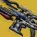 | 阿格尔的召唤 雷加的叠句 ↑意志实体 | 冰影适配追踪步枪。 固有对战斗人员的伤害为传说追踪步枪的 1.3 倍。 击杀触发一次冰影爆发，对 10 米内的战斗人员施加 100 层[50 层]减速。 冰影击杀补充 10 发弹药。 ↑意志实体：超能能量满时按住[填装]启用替代开火模式。 立即消耗 20%超能能量，之后每秒持续消耗 4%。 从备弹中把弹匣溢出填装到 192 发，伤害提高 80%。 命中施加 20 层[0 层]减速，持续 4+0 秒。 效果持续到弹匣打空、超能能量耗尽或收起武器为止。 该增伤不吃超能属性 >100，也不吃任何超能技能增伤。 |
| 阿莱索尼姆 | 收割者尖刺 残余炼金术 ↑我为人人 | 冰影微型导弹榴弹发射器。 享有轻质框架加成。对战斗人员伤害提高 40%（异域主要武器为 30%）。 直线射出收割者尖刺，造成 43[39] 点直击伤害与最高 697[91] 点爆炸伤害，5 米外降至 30%。 、勇士与被直击时插上尖刺，每 0.8 秒受到 79 点伤害，4 秒内共 6 跳。 第 6 跳时引爆收割者尖刺，并移除插着的射弹。 插刺伤害不致死，同一个目标身上的插刺数量没有上限。 被插刺的、勇士与每跳插刺伤害都生成一枚残余，单发最多生成 6 枚。 击杀生成一枚漂浮的残余，向自己飞来。拾取残余提供残余炼金术能量。 拾取 7 枚残余共计 50% 能量，再拾取 10 枚（共 17 枚）达到 100%。 残余炼金术能量达到 50% 时按住[填装]切换开火模式。 50%–99%：普通射击 → 特殊弹药模式｜100%：普通射击 → 特殊弹药模式 → 威能弹药模式。 已装弹的射击会消耗残余炼金术能量，且命中必定爆炸，因此无法插刺战斗人员。 特殊弹药模式：下一发射击为自己与盟友生成一枚特殊弹药块。消耗 50% 残余能量。 该弹药块提供总备弹的 10%，受弹药搜集模组影响。 威能弹药模式：下一发射击为自己与盟友生成一枚威能弹药块。消耗 100% 残余能量。 该弹药块提供总备弹的 10%，受弹药搜集模组影响。 ↑催化剂： 提供「我为人人」Perk。 | |
| 劲弩 | 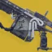 | 复合之力 瓦解破裂 ↑创世 | 特殊弹药动能精密线性融合步枪。 射出一枚可穿透护盾的弹头，造成 582[132] 点动能伤害，精准倍率 3.44×[4.3×]。 该弹头命中即摧毁屏障勇士的护盾与战斗人员的元素护盾，并对其施加瓦解破裂。 瓦解破裂带来的动能易伤对劲弩自身同样生效。 ↑催化剂： 被动提供 +20 操控性、+1 弹匣容量（5 → 6）与「创世」Perk。 实际效果是任何击破护盾都会补满弹匣。 |
| 邪恶符咒 | 诅咒之绳 腰射握把 全自动击发系统 ↑无尽诅咒 | 动能轻质脉冲步枪。 击杀补满弹匣，并提供 1 层诅咒之绳，持续 5.5 秒，最多 5 层。 诅咒之绳提高伤害，并让击杀额外提供超能能量。 诅咒之绳收枪后保留。 诅咒之绳： 伤害 +20%｜+40%｜+60%｜+80%｜+100% [10%｜20%｜30%｜40%｜50%] 额外超能能量 0.8%｜1.1%｜1.4%｜1.7%｜2% 不填装、不收枪，且每次间隔 7.5? 秒内击杀 3 名战斗人员： 触发一次诅咒爆炸，造成最高 305[?] 点动能伤害，范围 ? 米。 爆炸击杀计入击杀计数。诅咒之绳的增伤对爆炸伤害同样生效。 ↑无尽诅咒： 诅咒之绳持续时间延长到 7.5 秒。 | |
| 墓园双星 | 恐慌反应 傀儡分歧 ↑目标锁定 ↑我为人人 ↑幼雏 ↑高强度型弹药储备 | 可制作的缚丝攻击型微型冲锋枪。 不开火时每 0.2 秒自动回填弹匣，4.85 秒内最多回填到 34 发。 1–2 发 = 每跳 4 发｜3–8 发 = 3 发｜9–16 发 = 2 发｜17 发以上 = 1 发。 开火把回填间隔推迟到 0.285 秒。可在 1 发弹药下以 240? RPM 持续射击。回填到 34 发为止，以免挡住填装。 造成伤害为枯萎充能，每次伤害 +2%，累计 50 次达到 100%。 停火 1.3 秒后枯萎每 1.2 秒衰减 3.33%，41.1 秒衰减完毕。 填装速度随已备好的枯萎追踪弹数量提高。 枯萎充能收枪后保留，并照常衰减。 填装时： 触发恐慌反应，把储存的枯萎全部转成枯萎追踪弹，每 16.7% 枯萎折一发，最多 6 发。 折算一律向上取整。例：1% 枯萎 = 1 发，52% = 4 发，84% = 6 发。 枯萎追踪弹以腰射 450RPM｜机瞄 720RPM 射出，覆盖普通射击。 恐慌反应持续 7 秒，收枪后保留。 行为随当前路线而变。 傀儡决心： 每次间隔 ? 秒内对 3 名战斗人员造成伤害提供 50% 枯萎。 枯萎追踪弹命中造成 173[守护者 6.85｜构造体 81] 伤害，范围 3? 米。 追踪弹穿透战斗人员，每次最多再追击 10? 米内的 2 名战斗人员。 追踪弹可以重复锁定已命中过的战斗人员。 傀儡野心： 对同一名战斗人员或构造体在 1 秒内造成 12 次伤害提供 22% 枯萎。因取整，造成 24 次伤害即可凑满 6 发追踪弹。 枯萎追踪弹命中即爆炸，造成 45[9?] 点直击伤害与 542[21?] 点爆炸伤害，范围 0.25? 米。 ↑可选改装： 可插入「高强度型弹药储备」、「幼雏」、「我为人人」或「目标锁定」的等效 Perk。 | |
| 堡垒 | 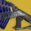 | 圣人之拳 突破 ↑光照无影 | 动能融合步枪。 一次连发命中 14 枚弹丸时： 接下来 3 秒内的下一次近战伤害提高 300%[100%]。 造成近战伤害时： 伤害提高 35%，填装速度 +?，0.85× 蓄力时间倍率，持续 8.5 秒。 再次造成近战伤害刷新「圣人之怒」的时长。 收枪移除该增益。 三连发，每发 7 枚弹丸。 每枚弹丸 136[31.2] 伤害 × 7 = 单发 952[218.4]，× 3 = 每消耗一发弹药共 2,856[655.2] 伤害。 ↑催化剂： 提供「光照无影」起源特性。 |
| 冥府三头犬+1 | 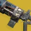 | 四头犬 散射弹包 ↑集中火力 | 动能四管高冲击力自动步枪。 伤害为高冲击力自动步枪的 85%。 两种开火模式在近距离都是反向伤害衰减。对冰影水晶伤害降低 75%。 每次射击呈三角形均匀射出 4 枚弹丸，其中一枚必定落在精度锥内。 每枚弹丸最高 44[20.4] 伤害，精准倍率 1.77×。 机瞄提供 −25% 弹丸散布。 ↑集中火力：击杀后 7 秒内按住[填装]启用集中火力。可切换开火模式时会显示绿灯。 伤害提高 50%[10%]，弹丸散布 −30%，持续 7 秒。 集中火力生效期间再用武器击杀会刷新时长。 收枪移除集中火力与其触发条件。 目标越近伤害越低，贴脸时最多降低 16.67%，到 14 米恢复基础伤害。 机瞄的伤害衰减系数 1.6×，把恢复基础伤害的距离推到 22 米。 |
| 监护人 | 精准弹头 天生在途 ↑精准连击 | 动能速射独头弹霰弹枪。 享有轻质框架加成。被动提高 5% 伤害衰减距离。 射出一枚精准弹头，造成 737[?] 伤害，精准倍率 1.76×。 每次间隔 ? 秒内造成 1 次精准击杀或 2 次精准命中： 获得「天生在途」，持续 10 秒。 再造成精准命中每次延长 3 秒，最长 10 秒。 该增益收枪后保留。 天生在途： 精准伤害提高 22%，0.58× 开火恢复延迟，伤害衰减距离合计提高 15%， +20 稳定性、+40 填装速度、0.75× 填装时长倍率、0.56× 操控性时长倍率。 ↑催化剂： 提供「精准连击」Perk。 | |
| 条件终局 | 分裂决策 超因果弹片 ↑治疗弹匣 ↑霜华窃取者 | 冰影＋烈日攻击型霰弹枪。 两发弹壳一次性填装。 计入「和谐回声」的武器判定，并吃它提供的操控性与填装速度加成。 弹药剩 2 发时： 造成冰影伤害，▲ 形散布。 吃冰影模组的加成。 弹药剩 1 发或 0 发时： 造成烈日伤害，⬤ 形散布。 吃烈日模组的加成。 12 枚弹丸中命中 10 枚即冻结目标。 12 枚弹丸中命中 10 枚即触发点燃。 ↑催化剂： 提供「治疗弹匣」与「霜华窃取者」Perk。 | |
| 血色浪漫 | 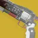 | 禁用武器 残忍疗法 ↑痛苦之道 | 动能三连发攻击型手炮。 号称打出的是违规的三连发，每发 67[18] 伤害，精准倍率 1.85×。 击杀回复 32 点生命值并开始生命值回复。 精准击杀补满弹匣。 ↑催化剂： 被动提供 +20 射程与「痛苦之道」Perk。 |
| 冷冻状态77K | 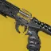 | LN2点射 液态冷却 ↑冷冻效率 | 冰影精密手枪。 击杀提供「LN2点射就绪」，启用蓄能弹填装。 该状态收枪后保留。 LN2点射就绪期间按住[填装]执行特殊填装，装入一发蓄能弹。 打出蓄能弹，或在蓄能弹备好时收枪，都会退回手枪模式。 蓄能弹需要蓄力 0.53 秒，直击即冻结目标。6? 米内的战斗人员同样被冻结[施加 50 层减速]。 ↑冷冻效率： 击杀被冻结的战斗人员补满弹匣。 |
| 库尔之影 | 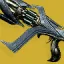 | 灵魂灼烧 毁灭利刃 灵魂锻铸 ↑魂火突刺 ↑魂火狂热 ↑魂火积怨 ↑魂火周济 | 动能攻击型融合步枪。 计入「忧愁武器」。 Destiny 2 最后一把加入的异域武器。 每次挥砍造成 ?[84] 点动能伤害。前置刀刃对腐化的战斗人员近战伤害提高 50%。 每次间隔 2? 秒内打出 2 次前置刀刃，或用前置刀刃击杀： 提供 1 层魂火充能，最多 6 层，并回复 40 点生命值。 层数只在开火或死亡时消耗。 开火消耗 1 层魂火充能，对战斗人员施加强效腐化。 强效腐化每 0.5 秒造成 65[?] 点动能伤害，每跳递增约 8.7%，共 20 跳，末跳最高 300[?] 伤害，合计 2,985[?] 伤害。 把近战技能替换为武器的前置刀刃，可打出两连击，突进距离延长到 7 米。 前置刀刃伤害吃近战属性与近战增伤。它不是偃月近战。 魂火充能的强效腐化让战斗人员死亡时生成一块魂火水晶。 魂火水晶是构造体，400? 点生命值，存在 15 秒，生命值归零时爆炸。 魂火水晶爆炸在 8 米内造成最高 1,065[?] 点动能伤害，边缘降至 75%。 魂火突刺｜15 米内的魂火水晶爆炸让前置刀刃能够施加腐化，每次 +7 秒，最长 20 秒。 腐化每 0.5 秒造成 16 伤害，每次施加最多 10 跳，可叠加。 魂火狂热｜15 米内的魂火水晶爆炸提供满级移动速度与 20?% 伤害抗性，每次 +7 秒，最长 20 秒。 魂火积怨｜战斗人员进入 7 米内时魂火水晶即爆炸，伤害提高 5%，并施加上述强效腐化。 魂火周济｜用前置刀刃击碎魂火水晶提供 1 层魂火充能并补充 1 发弹药。 三连发，每发 4 枚射弹，散布逐发扩大。 射弹造成 143[?] 点动能伤害。 ↑催化剂提供 4 个可选 Perk： |
| 亡者传说 | 颅骨之刺 杀人风 ↑暗铸扳机 | 可制作的动能攻击型斥候步枪。 每次填装 2 发。 精准命中提供 1 层颅骨之刺，持续 4 秒，最多 5 层。 层数收枪后保留。 1 层｜+8 射程、+2 稳定性、0.97× 填装时长倍率、+4 瞄准辅助、+1 已装弹药，对战斗人员伤害提高 3.4%。 2 层｜+16 射程、+4 稳定性、0.94× 填装时长倍率、+8 瞄准辅助、+2 已装弹药，对战斗人员伤害提高 6.8%。 3 层｜+24 射程、+6 稳定性、0.91× 填装时长倍率、+12 瞄准辅助、+3 已装弹药，对战斗人员伤害提高 10.2%。 4 层｜+32 射程、+8 稳定性、0.89× 填装时长倍率、+16 瞄准辅助、+4 已装弹药，对战斗人员伤害提高 13.6%。 5 层｜+40 射程、+10 稳定性、0.86× 填装时长倍率、+20 瞄准辅助、+5 已装弹药，对战斗人员伤害提高 17%。 ↑暗铸扳机： 被动提供 0.92× 腰射开火恢复延迟、−50% 腰射精度锥范围与 −?× 腰射精度锥扩张。 精准瞄准辅助锥重叠时优先判定为精准命中而非躯干命中。 5 层颅骨之刺时腰射伤害提高 24%[15%]。 腰射对战斗人员的总增伤最高可达 45%。 | |
| 悦耳之声 | 松解 纺锤 ↑启迪行动 | 特殊弹药缚丝适配点射线性融合步枪。 每次间隔 ? 秒内命中 6 次生成 3 只线虫。 造成精准击杀生成 1 只线虫。 线虫命中提供 1 层纺锤，最多 25 层，持续 10 秒。 纺锤每层提供伤害 +2%、+? 操控性与 +? 填装速度，25 层时为伤害 +50%。 再有线虫命中或悦耳之声命中会刷新纺锤时长。 纺锤可叠加，收枪后仍然生效。 三连发，每发造成 174[39] 伤害，精准倍率 3.43×。 ↑催化剂： 提供「启迪行动」Perk。 | |
| 最终警告 | 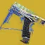 | 一网打尽 毒药抉择 ↑弦理论 | 缚丝速射手枪。 射弹飞行 50 米后消失。 按住扳机时： 24 米内的战斗人员在 0.5 秒内被标记，标记持续 2 秒；同时在 0.9 秒内蓄满一轮 10 连发。 连发射击 +30 稳定性。 蓄满的连发命中被标记的战斗人员时施加瓦解。 腰射时： 射出速度较慢的追踪弹，会积极追向被标记的战斗人员。 被标记的战斗人员受到的躯干伤害提高 20%。 机瞄时： 射出即时命中的射弹。 被标记的战斗人员受到的精准伤害提高 100%。 ↑弦理论： 对被标记的战斗人员伤害提高 10%。被标记的与只提高 5%。 命中被标记的战斗人员有几率补充 1 发弹药。 与 ≈ 85%｜及以上 = 25% 射弹造成 118[25] 伤害，精准倍率 1.6×，腰射与机瞄的行为不同。 |
| 先驱者 | 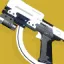 | 到此为止 收放自如 ↑巨岩 | 特殊弹药动能手枪。 射出加长射程的大口径弹，造成 118[42] 伤害，精准倍率 5.2×[1.85×]。 半自动射击提供 −33?% 后坐力、−?% 精度锥扩张与 −?% 精度锥范围。受准星形状所限，精度数值无法实测。 ↑巨岩：武器击杀后 4 秒内、弹药不少于 4 发时按住[填装]，把手雷技能替换为造成动能伤害的破片手雷。 破片手雷在 9 米半径内造成最高 1863[181] 伤害，投掷轨迹为中弧线。 爆炸在最远衰减处仍有 20% 伤害。自伤降低 75?%。 落地减速到位后开始 0.6 秒引信计时。 破片手雷计为手雷技能，会触发一切与手雷击杀或手雷技能使用相关的效果。 巨岩收枪后保留，只在使用手雷后移除。 |
| 隼月 | 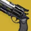 | 超因果射击 强力首发 ↑猎人之境 | 动能适配手炮。 精准命中或击杀提供 1 层超因果充能。 超因果充能按层数提高对战斗人员的伤害。 1 层 = 21%｜2 层 = 36.5%｜3 层 = 47.6%｜4 层 = 55.3%｜5 层 = 59.8%｜6 层 = 63.2%｜7 层 = 66.3% 填装、把弹匣补满，或在剩 1 发弹药、或已达 6 层以上时收枪，都会清空层数。 弹匣里的最后一发消耗全部层数，按层数打出增伤。 超因果充能自身的增伤不作用于最后一发的伤害。 超因果射击的最后一发增伤： 292%｜300%｜340%｜425%｜667%｜1071%｜1736% [30%｜33%｜45.7%｜80.5%｜154.3%｜288%｜508.6%] ↑猎人之境： 被动提供 +1 弹匣容量（8 → 9）。 射程、操控性与填装速度随超因果射击层数提高。 射程 +8｜+14｜+22｜+26｜+28｜+29｜+30 操控性 +?｜+?｜+?｜+?｜+?｜+?｜+? 填装速度 +15｜+25｜+35｜+40｜+50｜+50?｜+50? 该武器可以从「仄」处刷到不同词条。 |
| 越橘 | 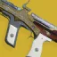 | 动如奔牛 狂暴 ↑动能震颤 | 动能攻击型微型冲锋枪。 按住扳机时： 每 0.833 秒提供 1 层动如奔牛，最多 2 层。 1 层提供 0.9× 开火恢复延迟与 +?% 后坐力。 2 层提供 0.8× 开火恢复延迟与 +?% 后坐力。 松开扳机即移除动如奔牛。 击杀补满弹匣，并提供 1 层「Yeehaw」狂暴，持续 3.5 秒。 伤害 +20%｜+41%｜+66% [10%｜21%｜33%] ↑动如奔牛： 提供「动能震颤」Perk，需 14 次命中触发，每道冲击波造成 215[20] 伤害，并吃武器增伤。 |
| 伊邪那岐的重担 | 砥砺刀锋 心无旁骛 ↑无双刀锋 | 动能适配狙击步枪。 按住[填装]执行一次较慢的填装，最多消耗 4 发弹药，装入一发高伤的砥砺刀锋弹，最高造成 7739 点精准伤害。 砥砺刀锋收枪后保留，直到打出为止。 2 层 = 伤害 +12%[20%]，精准倍率 +1.92。合计：79%[91%] 3 层 = 伤害 +25%[45%]，精准倍率 +2.74。合计：131%[167%] 4 层 = 伤害 +112%[165%]，精准倍率 +2.74。合计：291%[389%] 砥砺刀锋的填装动画速度与普通填装相同。 ↑无双刀锋4 层 = 伤害 +155%[218%]，精准倍率 +2.74。合计：370%[487%] ↑无双刀锋： 砥砺刀锋 4 层的增伤再乘 1.2×。 | |
| 玉兔 | 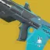 | 愚者宿命 边打边劫 萤火虫 ↑聚集宿命 | 动能高冲击力斥候步枪。 每次间隔 2 秒内造成 3 次精准命中，或造成 1 次精准击杀： 补满弹匣，并提供 1 层愚者宿命，最多 15 层。 愚者宿命收枪后保留。 愚者宿命： 打出非精准命中时消耗 1 层，让这一发按精准命中结算伤害。 萤火虫伤害提高 100%。 ↑催化剂： 被动提供 +30 稳定性。 按住[填装]消耗全部愚者宿命层数，打出一发宿命微型导弹，伤害随消耗的层数提高。 1 层时微型导弹造成 122[?] 点直击伤害与 171[?] 点爆炸伤害，8 米外降至 45%。 2 层 = 151 + 456｜3 层 = 179 + 575｜4 层 = 196 + 662｜5 层 = 213 + 733｜10 层 = 264 + 954｜15 层 = 281 + 1023 也可以用来火箭跳，且没有自伤。 |
| 赫沃斯托夫7G-0X | 正确抉择 注意了，守护者 边打边劫 ↑羸弱能量球 | 动能适配自动步枪。 弹匣中每第 7 发是跳弹，伤害提高 252.52%[守护者 5%｜构造体 252.52%]，自动瞄准锥范围 +50%。 从战斗人员身上弹开的子弹会弹向 8?[5?] 米内最近的战斗人员，造成 108[4.6] 伤害。 拾取能量球提供 7 层「注意了，」（正好够一整匣强化跳弹）。 层数收枪后保留。 「注意了，」生效期间打出跳弹会消耗 1 层，把该跳弹强化。 强化跳弹在战斗人员之间最多弹跳 7 次，每次寻找 12?[?] 米内的目标。同一名战斗人员最多被同一发跳弹打中两次。 ↑催化剂： 提供「羸弱能量球」Perk。 | |
| 遗言 | 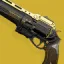 | 激燃火焰 腰射握把 ↑杀人风 ↑嫉妒刺客 | 动能手炮。 以 225RPM 全自动射击，每发造成 175[43] 伤害，精准倍率 1.79×。 腰射的精准命中伤害提高 88%[?%]。 腰射命中提供 1 层激燃火焰，持续 4 秒，最多 4 层。 填装、机瞄或收枪都会清空层数。 激燃火焰： 填装速度 +5｜+10｜+15｜+20 精度锥范围 −5%｜−10%｜−15%｜−20% ↑催化剂： 提供「杀人风」与「嫉妒刺客」Perk。 |
| 流明 | 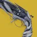 | 高尚弹药 天空祝福 ↑美德回响 | 动能适配手炮。 击杀生成一枚漂浮的遗灵，在 15 米内会向自己飞来。 拾取遗灵补充 4 发弹药并提供 1 发高尚弹药，最多 6 发。汇编器战靴的高贵追踪弹同样提供 1 发。 高尚弹药收枪后保留。 腰射会射出一发高尚弹药，积极追向最近的盟友。 高尚弹药为该盟友回复 90 点生命值，并让自己与该盟友同时获得天空祝福。 天空祝福： 伤害提高 35%[15%]，职业属性 +100，持续 11 秒。 ↑美德回响： 击杀改为生成 2 枚遗灵。 |
| 渎职 | 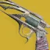 | 爆炸暗影 傀儡捕食者 ↑斩首武器 | 动能精密手炮。 命中在战斗人员身上嵌入爆炸弹头，持续 6 秒。弹头单独到期时不会造成伤害。 同一目标身上嵌满 5 枚弹头即全部引爆，每枚造成 216[45] 伤害。 已嵌入的弹头在目标死亡时同样引爆。 对智谋入侵者与堕落者战斗人员伤害提高 25%。 对被枯萎囤积的枯萎直接命中的战斗人员伤害提高 25%。 ↑催化剂： 被动提供 +20 射程与「斩首武器」Perk。 |
| 米达多功能 | 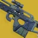 | 米达软件包 ↑重要情报 | 动能轻质斥候步枪。 享有轻质框架加成。带米达加成的武器同样继承移动加成。 举枪期间移动速度提高 12.5%。 机瞄期间雷达保持可见。 用米达多功能与其他带米达加成 Perk 的武器击杀，推进四阶段的软件更新计数。 主要米达武器提供 15%[100%] 当前阶段进度（相当于满进度的 3.6%[25%]）。 特殊米达武器提供 10%[50%] 当前阶段进度（相当于满进度的 2.5%[12.5%]）。 死亡把计数退回上一阶段的起点。 软件更新：各阶段的增益逐级叠加，对战斗人员的增伤为累计值。 芯片｜0.75× 操控性时长倍率，对战斗人员伤害提高 4.8%。 枪管｜+15 射程、+15 稳定性，对战斗人员伤害提高 9.6%。 光学｜瞄准辅助衰减距离 +15%、自动瞄准锥角度 +5%，对战斗人员伤害提高 14.4%。 弹药｜射击命中即爆炸，额外造成最高 22[7] 伤害，3 米外降至 0%，对战斗人员伤害提高 14.4%。 ↑重要情报：15 米内有战斗人员时： 增强雷达、+20 填装速度、0.85× 填装时长倍率。 条件不满足后再保留 4 秒，收枪也照常保留。 |
| 蒙特卡洛 | 蒙特卡洛法则 马尔可夫链 ↑随机复仇 | 动能适配自动步枪。 命中提供 2%近战技能能量。 击杀提供 1 层马尔可夫链，持续 4.5 秒，最多 5 层，并有 25% 几率提供固定 100%近战技能能量。 近战击杀补满弹匣并直接给满 5 层。 马尔可夫链： 伤害 +13%｜+26%｜+39%｜+52%｜+65% [6.6%｜13.2%｜19.8%｜26.4%｜33%] ↑随机复仇：5 层马尔可夫链时按住[填装]，把近战技能替换为一次刺刀近战攻击。刺刀计为无充能近战攻击。 刺刀造成 2,495[140] 点动能近战伤害，提供固定 50%近战技能能量，并把近战突进距离提高到 7 米。 刺刀就绪状态收枪后保留。 | |
| 坏疽 | 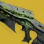 | 诅咒使者 绝望 ↑我为怨魂 | 动能速射自动步枪。 计入「忧愁武器」。 造成精准击杀、诅咒怨魂爆炸击杀，或击杀被腐化的战斗人员时： +70? 填装速度、0.9?× 填装时长倍率，持续 ? 秒。 触发一次诅咒怨魂爆炸，在 8 米半径内造成最高 630[130?] 点电弧伤害，边缘降至 10%，并施加腐化。 诅咒怨魂爆炸击杀补满弹匣。 腐化每 0.5 秒造成 18[0.4?] 点动能伤害，持续 3.5[2] 秒。 诅咒怨魂爆炸与腐化伤害吃战斗人员档位倍率。 顺带一提：诅咒怨魂（邪魔族战斗人员）对战斗人员造成 250 伤害。 造成精准击杀或诅咒怨魂爆炸击杀后 ? 秒内完成填装： 0.8× 开火恢复延迟倍率、+6? 稳定性、+10–15? 瞄准辅助，持续 7 秒。 ↑我为怨魂： 每次间隔 3 秒内对 3 名战斗人员造成伤害，提供伤害 +35%、+? 射程与 +? 瞄准辅助，持续 10 秒。 再对 3 名战斗人员造成伤害即可重新触发，收枪后保留。 |
| 彼岸新域 | 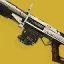 | 大师 靶心加固 速射瞄准 ↑顶阶精通 | 动能栓动狙击步枪。 提供 1 层大师，死亡前最多 100 层。 大师： 提高精准伤害，20 层时达 70%。 15.7%｜22.2%｜27%｜31.3%｜35%（5 层） 38.4%｜41.4%｜44.3%｜47%｜49.5%（10 层） 51.9%｜54.2%｜56.5%｜58.6%｜60.7%（15 层） 62.64%｜64.56%｜66.42%｜68.23%｜70%（20 层） 达到 20 层时改名为「大师」，之后到 100 层缓慢提高到 73%。20 层以上时射击带爆炸特效。 100 层变为「泰斗」，999 层变为「首席大师」。 靶心加固每 1.49 秒一发。 +? 稳定性、+? 操控性、+40 填装速度、+? 瞄准辅助、0.95× 开火恢复延迟，持续 3 秒，或持续到打出一发未命中要害为止。 ↑顶阶精通：大师 20 层以上时： 弹匣持续回填，实际上不再需要填装。 靶心加固持续时间延长到 ? 秒。 射出的子弹造成 970[155] 点动能伤害，精准倍率 2.75×，随后的上膛动作速度随填装速度变化。 听到「咔哒」声后用冲刺可以取消上膛动作，射速因此显著提高。 上膛速度： 基础上膛每 1.834 秒一发。 100 填装速度每 1.35 秒一发。 100 填装速度加靶心加固每 1.275 秒一发。 100 填装速度加取消上膛加靶心加固约每 1.05 秒一发。 造成精准命中时： |
| 新马尔帕伊斯 | 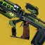 | 裂解弹药 悬停爆破 ↑瓦解爆破 | 缚丝特殊弹药微型导弹脉冲步枪。 按住[填装]手动引爆全部已嵌入的射弹。 三连发射出黏性射弹，嵌在命中的战斗人员与地形上，每发造成 271[2] 点直击伤害。 射弹在按住[填装]时，或嵌入 6 秒后引爆，在 6 米内造成最高 321[60] 点爆炸伤害。 手动引爆同一名战斗人员身上的 6 枚射弹即施加悬停。 ↑瓦解爆破： 嵌在战斗人员身上的射弹，其爆炸伤害改为施加瓦解。 |
| 无时辩解 | 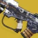 | 再次回转 岁月流逝 喂食狂热 ↑侧翼爆击 | 动能高冲击力脉冲步枪。 精准命中，以及命中受冰影影响的战斗人员，提供 1 层再次回转并补充 1 发弹药。 叠到 10 层召唤一道岁月流逝传送门，持续 9 秒。精准命中每次延长 1 秒。 再次回转的层数收枪后保留。 岁月流逝传送门： 每 1.25 秒向准星附近 50 米内的战斗人员打出 3 连发。 每发造成 49[10.2] 伤害，没有伤害衰减，继承无时辩解的护盾穿透，并吃战斗人员档位倍率。 收枪移除传送门。 ↑侧翼爆击： 传送门的连发间隔缩短到 0.85 秒。 |
| 枯骨鳞片 | 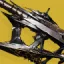 | 尖啸群击 毒性过载 ↑枯骨鳞片催化 | 可制作的动能精密微型冲锋枪。 计入「忧愁武器」。 射出速度较慢的追踪射弹，伤害比精密微型冲锋枪高约 10.8%。 每次间隔 3 秒内命中 14 次或造成 7 次精准命中，或造成一次击杀： 以该战斗人员为中心触发一次强效腐化爆发，腐化 5 米内的战斗人员。 强效腐化的机制与「亡灵之握」相同。目标死亡后腐化爆发有 2 秒冷却。 枯骨鳞片的强效腐化吃增益、减益、异域主要武器对的加成，以及动能伤害加成。 重新施加强效腐化会把递增的伤害重置。 ↑枯骨鳞片催化： 被动提供 +20 稳定性与 +30 填装速度。 腐化击杀补满弹匣，并可溢出填装到弹匣容量的 300%。 两次溢出填装之间有 0.5 秒冷却。 |
| 全面爆发 | 腐蚀扩散 不法之徒 寄生 ↑病媒 | 可制作的动能轻质脉冲步枪。 使用自动步枪的后坐动画。 每次间隔 1? 秒内命中 12 次生成 2–3 只纳米蜂群。 精准击杀生成 9 只纳米蜂群。 纳米蜂群： 追踪 ? 米内的战斗人员，命中造成 77[13] 伤害并嵌入其体内 9 秒。 未嵌入目标的纳米蜂群在 3 秒后开始消失。再嵌入新的会把时长刷新回 9 秒。 全面爆发对身上带纳米蜂群的战斗人员按数量提高伤害。 1 只 = 30%[15%]｜2 只 = 60%[30%]｜3 只 = 90%[45%]｜4 只 = 120%[75%]｜5 只 = 150%[?%]｜100 只 = 300%[?%] 第 5 只之后每多一只增伤 +2.1%，100 只时达 300%[?%]。 带纳米蜂群的战斗人员会在全面爆发的瞄具里高亮。并非所有外观都生效。 ↑病媒： 纳米蜂群的直击伤害提高 25%。 带纳米蜂群的战斗人员死亡时释放 4 只病媒纳米蜂群。 病媒纳米蜂群造成 13[?] 伤害。 | |
| 英勇利刃 | 远程武器 鸬鹚反转 鸬鹚连击 ↑占据上风 ↑回响利刃 ↑能量通道 ↑超利刃 | 特殊弹药、可穿透护盾的光剑型偃月。 可更换刀柄、握把、Perk、模组与催化剂。 对战斗人员护盾伤害提高 50%，对屏障护盾伤害提高 200%。 防御形态没有任何增伤，可用来读对的基础伤害。 [重攻击轻按]打出远程攻击，把刀刃掷出最远 50 米，最多追踪 3 名战斗人员后返回。 每次命中造成 945[174] 点动能伤害。返回途中伤害降低 80%。攻击可召回刀刃。 [重攻击长按]把刀刃沿直线掷出，伤害提高 100%。[松开重攻击]召回刀刃。 格挡命中会反射一道随元素变色的能量弹，朝准星方向造成 255[50] 点动能伤害。 3 次[轻攻击]之后接[重攻击]打出鸬鹚连击。 鸬鹚连击造成 689[368] 点动能伤害，随后是 3 段各 417[220] 点伤害，合计 1940 伤害。 ↑占据上风 = 对至少低于自己 3? 米的战斗人员，远程与反射伤害提高 30%。自己不必站在地面上。 ↑回响利刃 = 掷出的刀刃可追踪的战斗人员由 3 名提高到 5 名。 ↑能量通道 = 接住掷出的刀刃时开始生命值回复，并按该次投掷的远程命中数每次回复 ? 点生命值，10 次命中最多回复 ? 点。 ↑超利刃 = 反射提供增幅 15 秒，并让下一次近战突进距离提高 100?%。收枪移除该效果。 [轻攻击]打出近战连段，每击造成 479[256] 点动能伤害。近战攻击可以释放电光充能。 [格挡]在 ?° 锥形范围内提供 100%[≈46%] 伤害抗性。 平衡形态｜每次间隔 5 秒内打出 3 次近战击杀，补充 1 发弹药、回复 65 点生命值并开始生命值回复。 对与战斗人员伤害提高 10%。因属性换算实际为 11.2%。 防御形态｜开始格挡后 1 秒内挡下攻击，伤害提高 20%，持续 2 秒。 每次间隔 ? 秒内格挡 ? 次攻击补充 1 发弹药，每秒最多一次。 进攻形态｜每次间隔 ? 秒内造成 3 次伤害补充 1 发弹药。 对与载具伤害提高 15%。 | |
| 英勇利刃 2：冲击核心 | 冲击核心 | 核心按所装备的超能技能元素提供对应的元素效果。 由英勇利刃首次施加的灼烧伤害提高 5%，且其伤害可被武器增益提高。 冲击核心［造成近战伤害时］= 1 层电光充能｜25?+10? 层灼烧｜虚弱 6 秒｜40? 层减速持续 ? 秒｜割裂 10 秒 特殊弹药、可穿透护盾的光剑型偃月。 可更换刀柄、握把、Perk、模组与催化剂。 对战斗人员护盾伤害提高 50%，对屏障护盾伤害提高 200%。 防御形态没有任何增伤，可用来读对的基础伤害。 [轻攻击]打出近战连段，每击造成 479[256] 点动能伤害。近战攻击可以释放电光充能。 3 次[轻攻击]之后接[重攻击]打出鸬鹚连击。 鸬鹚连击造成 689[368] 点动能伤害，随后是 3 段各 417[220] 点伤害，合计 1940 伤害。 [重攻击轻按]打出远程攻击，把刀刃掷出最远 50 米，最多追踪 3 名战斗人员后返回。 每次命中造成 945[174] 点动能伤害。返回途中伤害降低 80%。攻击可召回刀刃。 [重攻击长按]把刀刃沿直线掷出，伤害提高 100%。[松开重攻击]召回刀刃。 [格挡]在 ?° 锥形范围内提供 100%[≈46%] 伤害抗性。 格挡命中会反射一道随元素变色的能量弹，朝准星方向造成 255[50] 点动能伤害。 平衡形态｜每次间隔 5 秒内打出 3 次近战击杀，补充 1 发弹药、回复 65 点生命值并开始生命值回复。 对与战斗人员伤害提高 10%。因属性换算实际为 11.2%。 防御形态｜开始格挡后 1 秒内挡下攻击，伤害提高 20%，持续 2 秒。 每次间隔 ? 秒内格挡 ? 次攻击补充 1 发弹药，每秒最多一次。 进攻形态｜每次间隔 ? 秒内造成 3 次伤害补充 1 发弹药。 对与载具伤害提高 15%。 ↑可插入的催化剂： | |
| 瞬变风暴 | 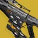 | 导弹追踪弹 手雷追逐者 ↑纳米纠缠 | 动能／缚丝速射自动步枪。 数值按缚丝形态给出。 命中 10 次装入一发追踪微型导弹，开火时覆盖一发普通子弹。命中计数收枪后保留，填装时清空。 追踪微型导弹积极追击战斗人员，造成 5[2.7] 点直击伤害与最高 155[守护者 20｜构造体 80] 点爆炸伤害。 追踪导弹命中提供 1 层手雷预备，供榴弹发射器模式使用，最多 3 层。 榴弹发射器模式： 攒到 1 层手雷预备后按住[填装]切入该模式。开火模式收枪后保留。 开火消耗 1 层，打出一发手雷，造成 30[守护者 14｜构造体 81] 点直击伤害与最高 1,278[守护者 120｜构造体 960] 点爆炸伤害，5 米半径内边缘降至 30%。 该手雷没有自伤。开火后自动排入一次填装以装下一发；手雷用尽则改为普通填装。 ↑纳米纠缠： 伤害类型转为缚丝，不再享有动能伤害加成。 榴弹发射器模式的击杀生成一枚缠结。 手雷预备层数与命中计数收枪后保留。导弹飞行距离不超过 50 米。 |
| 鼠王 | 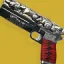 | 鼠党 鼠害 ↑隐患横行 | 动能速射手枪。 20 米内每有一名举着鼠王的盟友就提供 1 层鼠党，最多 5 层。 鼠党降低开火恢复延迟并提高弹匣容量。 鼠党： 开火恢复延迟 —｜0.87×｜0.8×｜0.7×｜0.6× 弹匣容量 —｜+2｜+4｜+6｜+9 击杀后 3 秒内完成填装： 获得隐身，持续 5.8 秒。 ↑隐患横行： 被动提供 +20 瞄准辅助与 +20 后坐方向。 击杀后 6 秒内完成填装会开始生命值回复并回复约 2 点生命值。 |
| 零号修订 | 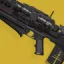 | 猎人踪迹 移动目标 ↑越战越勇 ↑喂食狂热 ↑事不过四 ↑不法之徒 | 可制作的动能脉冲步枪。 起源特性可在重型点射框架与激进爆弹框架之间选择。 造成 12 次精准命中提供 1 层目标数据，48 次精准命中后达到 4 层上限。 猎人踪迹： 至少有 1 层目标数据时按住[填装]切入猎人踪迹模式。装入的弹药数等于已攒的层数。 把 18 倍镜换成 50 倍镜。射击精度完美，并带红色狙击镜反光。 射出高伤的猎人踪迹弹，造成 564[158] 伤害，精准倍率 3.25×，射速 72RPM，并继承护盾穿透。 猎人踪迹命中触发一道动能冲击波，在 6 米内造成最高 322[20] 伤害，边缘降至 0%，并施加疲惫 5 秒。 猎人踪迹收枪后保留，只有打空弹匣或死亡才会退出。 疲惫让战斗人员的输出降低 25%。 ↑可选改装： 可插入「喂食狂热」、「事不过四」、「不法之徒」或「越战越勇」的等效 Perk。选「事不过四」时最多可打出 6 发狙击。 |
| 狂飙 | 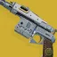 | 同谋 疾风怒涛 ↑援助之手 | 动能攻击型手炮。 击杀补满能量武器的弹匣，并把「长相聚」的基础弹匣容量 +1，最多提高到 100%。 用「长相聚」武器击杀会装入一发超量充能弹。 每次间隔 3 秒内连续用「长相聚」武器击杀会装入更多，最多 25 发。 2 连杀 = 每次击杀 +2 发｜3 连杀及以上 = 每次击杀 +3 发。 超量充能弹收枪后保留，死亡时清空。 开火消耗一发超量充能弹，打出增伤。 与 = +300%｜与勇士 = +280%｜ = +260%｜[守护者 = +75%] ↑援助之手： 被动提供 +20 射程与 +40 操控性。 用超量充能弹击杀提供 2 层「绝不是射击切换」，最多 6 层。 收起狂飙或「长相聚」武器时： 消耗 1 层援助之手，提供 0.5× 举枪／收枪时长倍率。 |
| SUROS政权 | SUROS遗产 旋转直上 ↑升级大师杰作 ↑SUROS权势 | 动能适配自动步枪。 Perk 可在「双重速率接收器」与「旋转直上」之间选择。 按住[填装]切换开火模式。 击杀有 25% 几率开始生命值回复并回复 20 点生命值。 弹匣余量从 50% 逐步降到 0% 的过程中： 伤害提高 5% 到 10%。 旋转直上在按住扳机时把开火恢复延迟由 0.83× 提高到 0.67×。 按住扳机每 12 发提升一次射速。松开扳机即重置。 在旋转直上生效期间击杀，提供 1.?× 的特殊弹药进度倍率。 双重速率接收器把该武器变成高冲击力自动步枪框架，机瞄期间 +3 变焦、+30 射程。 在双重速率接收器机瞄状态下击杀，提供 1.?× 的威能弹药进度倍率。 被动提供 +50 后坐方向。 ↑SUROS权势： 击杀有 50% 几率回复生命值。 | |
| 糖果生意 | 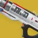 | 发薪日 营业时间 ↑严肃生意 | 动能转管高冲击力自动步枪。 拾取弹药块时： 补满弹匣。 按住扳机时： 转管加速，1.38 秒内逐步提供最高 0.4× 开火恢复延迟与 +? 射程。 转速拉满后腰射精度锥范围 −15%。 每 18 发打出一枚爆炸弹，在 4 米内造成 56[21] 伤害，无伤害衰减。 转速拉满后爆炸弹间隔降到 8 发。 ↑严肃生意： 转速拉满时提供 25% 受击抖动抗性。 高速射出的子弹造成 41[16.45] 伤害，精准倍率 1.51×。 |
| 领航员 | 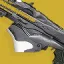 | 防护编织 纬纱切线手 ↑棘手绳结 | 缚丝适配追踪步枪。 每次间隔 1 秒内对同一名盟友命中 8 次： 该盟友回复 60 点生命值、开始生命值回复，并获得织造铠甲。持枪者同样获得织造铠甲并生成 5 发弹药。 若护盾已被治疗，则护盾继续充能；否则只回到重伤线。 织造铠甲生效期间： 伤害提高 25%[5%]，弹药生成 +40。 每次间隔 1 秒内命中 20 次： 施加割裂，并为持枪者提供织造铠甲。 ↑棘手绳结：按住[填装]切入抓钩缠结开火模式。 该模式消耗 1 发弹药，把一枚抓钩缠结射到最远 23.5 米处。 替代开火模式生效期间会显示抓钩缠结的落点预览。 生成抓钩缠结后需 30 秒冷却才能再次启用替代开火。必须落地才开始计时。收枪即切回追踪步枪模式。 |
| 荆棘 | 吞噬者印记 灵魂吞噬者 ↑精炼之魂 | 动能适配手炮。 计入「忧愁武器」。 直击造成腐化，延迟 0.3 秒后每 0.5 秒造成 30[0.4] 点动能伤害，共 4 跳，2 秒内合计 120[1.6] 伤害。 腐化可叠加。 击杀生成一枚漂浮的残余，在 15 米内会向自己飞来。 拾取残余补充 4 发弹药（可溢出到 40 发），并提供灵魂吞噬者，初始持续 7 秒。 灵魂吞噬者让腐化伤害提高 200%[1750?%]。 再拾取残余每次延长 7 秒，最长 11 秒。 灵魂吞噬者收枪后保留。 ↑精炼之魂： 被动提供 +15 射程、+5 稳定性与 +5 空中效率。 击杀或拾取残余提供精炼之魂，持续 7 秒。 精炼之魂额外提供 +10? 射程、+15? 操控性与 +50 敏捷。 再拾取残余或再击杀每次延长 7 秒，最长 11 秒。 精炼之魂收枪后仍然生效。 | |
| 恶意触碰 | 充斥凋零 ↑精准工具 | 动能速射斥候步枪。 计入「忧愁武器」。 每次间隔 5 秒内用武器击杀把计数推满 100%： = 50%｜／／ = 100%｜[守护者 = 66.7%] 开始生命值回复并回复 105 点生命值。 弹匣剩 1 发时： 伤害提高 132%[30%]，每开一枪扣除 7 点生命值，并把该发退还。生命值扣除不致死。 枯萎发射器的伤害同样吃最后一发的增伤。生命值扣除受伤害抗性影响。 蓄满后按住[填装]切入枯萎发射器。切换速度与填装速度挂钩。 精准命中提供 1 层充斥凋零，最多 10 层。 10 层时充斥凋零提供最高 +? 稳定性与 +? 填装速度。 攒到 10 层即可切换一次枯萎发射器模式。切换不会补满弹匣。 枯萎发射器： 射出一团移动缓慢的枯萎，直击造成 220[113] 点电弧伤害，并留下每跳 3 点伤害的场，致盲并腐化范围内的战斗人员。 腐化每 0.5 秒造成 27[0.375?] 点动能伤害，持续 3.5[2] 秒，共 7[4] 跳。 被枯萎命中的战斗人员受到「忧愁武器」的伤害提高 50%，持续 5 秒。 切入枯萎发射器模式时开始生命值回复并回复 105 点生命值。 ↑慈悲触碰： 提供「精准工具」Perk。 精准工具的时长足够触发枯萎发射器、打出一发，再继续正常射击。 | |
| 旅行者的选择 | 光能聚集 旅行者的赠礼 ↑渗透 ↑充盈 | 动能适配手枪。 击杀提供 1 层光能聚集，最多 10 层。 层数收枪后保留。 按住[填装]触发特殊填装动画，消耗全部光能聚集层数换取技能能量。 每层提供 10%手雷技能能量、近战技能能量与职业技能能量。 光能聚集每层提供 +15 操控性、+15 填装速度与 +2 瞄准辅助。 ↑催化剂： 被动提供 +2 弹匣容量（15 → 17）、「渗透」Perk 与「充盈」Perk。 | |
| 雨淞弧线 | 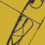 | 冰雹弹幕 冰雹风暴 ↑寒噤箭袋 | 冰影轻质弓箭。 享有轻质框架加成。 击杀提供 1 层冰雹弹幕，最多 5 层。 腰射会把储存的冰雹弹幕箭一齐射出，均匀铺开。 冰雹弹幕层数收枪后保留。 冰雹弹幕箭命中生成一块大型冰影水晶，直击施加 100 层[60 层，持续 1+1 秒]减速。 对被冻结的战斗人员与冰影水晶伤害提高 50%。 与「裂解之吟」及冻结倍率叠乘。 ↑寒噤箭袋： 施加冻结或减速后 5 秒内蓄力时间倍率 0.65×。 |
| 警惕羽翼 | 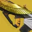 | 残酷真相 殊死一搏 ↑大合奏 | 动能五连发高冲击力脉冲步枪。 一次点射打出 5 发，每发造成 41[16] 伤害，精准倍率 1.63×。 24 米内有盟友阵亡时： +20 敏捷，冲刺速度由 8 米/秒 提高到 8.5 米/秒，滑铲距离由 6.5 米 提高到 8.5 米，持续 6 秒。 开始生命值回复。 作为最后一名存活的，或单人游玩时： 生命值属性 +100、+X 操控性、+30? 填装速度。 游戏中唯一后坐力固定的武器。 ↑催化剂： 提供「大合奏」Perk。 |
| 邪恶工具 | 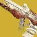 | 蔓延羸弱 什一收割 ↑洋底贡品 ↑墓碑 | 冰影速射斥候步枪。 每次间隔 4.5 秒内造成 4 次精准命中，提供蔓延羸弱，持续 4.5 秒。 再造成精准命中刷新时长。 收枪移除蔓延羸弱。 蔓延羸弱生效期间： 精准命中施加 40 层[20 层]减速，持续 4+4[4+2] 秒。 造成精准击杀，或碎裂一块冰影水晶： 生成一枚小型冰影碎片，飞回持枪者身边。 两次生成碎片之间有 2 秒冷却。 拾取冰影碎片或摧毁冰影水晶补满弹匣。 ↑洋底贡品： 拾取冰影碎片额外溢出填装 5 发，最多溢出到弹匣容量的 200%，并提供「墓碑」Perk。 |
| 碎愿者 | 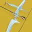 | 女王之怒 狩猎箭头 ↑我为人人 | 动能轻质战斗弓。 满蓄力时机瞄提供真视，可穿墙显示 64 米内的战斗人员轮廓。 真视持续到退出机瞄，或生效 3 秒后结束。必须重新拉满弓才能再次触发。 箭矢共造成 1,164[159] 伤害，分成 3[2] 段结算。 狩猎箭头带来的另外 2[1] 段最高各 444[28.75] 伤害，且不吃精准命中加成。 拉弓蓄力程度影响全部三段伤害。 箭矢本体最高造成 276[129] 伤害，精准倍率 1.79×。 对被枯萎囤积的枯萎命中的战斗人员伤害提高 25%。 对堕落者战斗人员伤害提高 10%。 ↑催化剂： 提供「我为人人」Perk。 |
| 守愿者 | 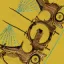 | 织陷者 缠丝杀手 ↑持久陷阱 ↑多线程陷阱 ↑斩首武器 ↑幼雏 | 可制作的缚丝精密弓箭。 精准命中与击杀为织陷者箭蓄能，攒满 6 点即可启用。 精准命中 = 1｜ = 1｜及以上 = 2｜[守护者 = 3] 蓄满后用腰射打出织陷者箭。 织陷者箭： 直击战斗人员会在其脚下张开一张网，并施加悬停。 命中处生成一张网，含 6 个呈 ⏏ 形连结的陷阱。陷阱持续 15 秒，各有 10 点生命值。 碰到连结陷阱的战斗人员受到 341[5] 伤害并被悬停。 每悬停 2 名战斗人员断掉一条连线。一张网最多悬停 6 名战斗人员。 对同一名战斗人员重复悬停有 5 秒冷却。 对被悬停的战斗人员伤害提高 50%[20%]。 打在被悬停的战斗人员躯干上再额外提高 50%。伤害数字显示为黄色，但不计为精准命中。 对被悬停的战斗人员，精准命中造成 701 伤害，躯干命中造成 806 伤害。 用该武器悬停战斗人员，或伤害已被悬停的战斗人员时： +100 填装速度、0.7× 蓄力时间倍率，持续 ? 秒。 持久陷阱改装｜织陷者陷阱持续时间 +10 秒，达到 25 秒。 多线程陷阱改装｜每个陷阱可悬停的上限提高到 3 名，一张网合计最多 18 次悬停。 ↑催化剂提供多个可制作 Perk： 另可选「幼雏」或「斩首武器」Perk。 |
| 枯萎囤积 | 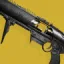 | 古昧的折磨 倾家荡产 ↑无声报警 | 动能后膛填装榴弹发射器。 射弹触地引爆，在 6 米内造成最高 172[51] 伤害，边缘降至 0%，并在落点生成枯萎地面。 枯萎地面落地后持续 4.5 秒，覆盖 4.5 米半径。 站在枯萎地面上的战斗人员每 0.3 秒受到 86[40] 伤害。 直击造成 52[10] 点直击伤害并使目标枯萎，每 0.6 秒造成 172[80] 伤害，持续 9.5 秒。 直击已枯萎的战斗人员会把直击伤害提高到 773[?]。 同一名战斗人员身上的枯萎与枯萎地面的伤害不能同时结算。 枯萎的战斗人员死亡时在脚下掉落一枚枯萎囤积射弹。 ↑无声报警： 被动提供 +40 操控性，收枪 2 秒后自动补满弹匣。 渎职与碎愿者对枯萎的战斗人员伤害提高 25%。 |
能量武器
| 武器 | 图标 | 异域 PERK | 说明 |
|---|---|---|---|
| 北极光 | 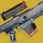 | 基本法则 离子回归 ↑盾牌迷途 | 多元素攻击型狙击步枪。 按填装键在电弧、烈日、虚空三种元素间切换。 所选元素在收枪与死亡后保留，默认为虚空。 施加或受到与当前元素相同的元素效果时： 伤害提高 30%[10%]，持续 10 秒。 打破同元素护盾时： 填满弹匣，获得 5 层离子回归，最多 5 层。 处于超能中的视为带有与其超能同元素的护盾。 离子回归： 每次开火消耗 1 层。 伤害提高 15%，精准伤害提高 19%。 相对基础值，精准伤害合计提高 37%。 离子回归的弹药在收枪与填装后保留。 ↑催化剂： 被动提供 +20 填装速度与「盾牌迷途」Perk。 |
| 深埋血脉 | 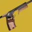 | 饥渴弩箭 暴力复活 ↑分脉血统 | 虚空火箭助推框架手枪。 每次射击发射 2 枚追踪弩弹，每枚造成 249[42.3] 点虚空伤害，精准倍率 1.2×。 每枚弩弹命中回复 11 点生命值。 击杀推进一个计数器，推满 100% 时获得吞食。 计数器没有时限。吞食生效期间的击杀不计入。 = 25%｜及以上 = 100%｜ = 25% ↑分脉血统： 吞食生效期间： 命中施加虚弱 5[?] 秒。 +? 填装速度，0.?× 填装时长倍率。 |
| 离心混合器 | 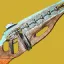 | 过充电容 再生运动 ↑静电累积 | 电弧精密自动步枪。 冲刺、滑铲与射击积攒充能，最高提供 +? 射程与 +? 填装速度。 射击 = 自动连发 3 发后 +20%/秒｜滑铲 = 每次 +10%。 冲刺 = 延迟 0.25 秒后 +20%/秒。移动速度须高于约 6 米/秒 才能积攒。 停止上述动作 1.1 秒后，充能按每秒 −33% 衰减。手动填装立即清空充能。 充能 ≥40% 时击杀： 战斗人员爆炸，在 7 米半径内造成最高 95[76] 点电弧伤害，最低衰减至 30%，并致盲 10 秒。 充能 100% 时触发的爆炸造成 189[?] 点伤害，最低衰减至 40%，在 8 米半径内致盲 10 秒。 冲刺期间每 0.34 秒补充 10% 弹药。 ↑静电累积： 增幅期间每秒被动积攒 7% 充能，并取消被动衰减。 被动充能与主动充能叠加。手动填装仍会清空充能。 |
| 单人合唱 | 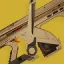 | 指挥框架 狂热长矛 ↑维持生计 ↑失衡弹药 ↑猛攻 | 可塑造特殊弹药虚空指挥框架自动步枪。 射弹飞行 100 米后消失。 机瞄时： 消耗 1 发弹药射出即时命中射弹，每发造成 243[40.25] 点伤害，精准倍率 1.79×。 狂热长矛与「放射虫转发器」机制相同，伤害大幅提高。 爆炸在 7.5 米内造成最高 239[?] 点虚空伤害，最低衰减至 0%。 活性放射体液在 3 米内每秒造成 123[?] 点电弧伤害，最多 5 次。 腰射时： 消耗 5 发弹药射出一枚分裂射弹，飞行 7.5 米后呈 + 字散开成 5 枚慢速射弹。 初始射弹造成 98[31] 点虚空直击伤害，以及最高 849[213] 点爆炸伤害，3 米内最低衰减至 30%。 分裂射弹每枚造成 17[6] 点直击伤害，以及最高 170[43] 点爆炸伤害，3 米内最低衰减至 30%。 弹匣不足 5 发时分裂数量减少。不造成自伤。 ↑催化剂： 可选装「失衡弹药」「猛攻」「维持生计」的等效 Perk。 |
| 云霄破击 | 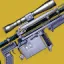 | 致命极性 风暴使者 ↑精准连击 | 电弧速射狙击步枪。 精准击杀立即召下一道聚焦雷击，并提供 5 层电光充能。 6 秒内造成 3 次精准命中时： 获得 1 层电光充能。 召下一道聚焦雷击，1.1 秒后造成伤害，再过 0.5 秒接一轮落雷。 聚焦雷击在 7 米内造成最高 973[300] 点电弧伤害，最低衰减至 0%。 落雷齐射在目标上方呈 X 形释放 4 道闪电，在 5 米内造成最高 584[180] 点伤害，最低衰减至 25%，并造成强击退。 每轮齐射对同一名战斗人员只能造成一次伤害。精准命中计数在收枪时清零。落雷齐射可能造成严重自伤。 ↑催化剂： 被动提供 +25 操控性与「精准连击」Perk。 |
| 寒冰核心 | 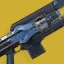 | 冷酷融合 漫长寒冬 ↑超充弹匣 | 电弧适配追踪步枪。 随着能量积攒，伤害稳步提高，最高 +80%。 停止产生能量 1.1 秒后，全部能量在 0.2 秒内清空。 造成伤害时： 提供 40% 能量/秒，持续 1 秒。 初始充能有 0.267 秒延迟才开始累积。 拾取离子轨迹时： 在 0.5 秒内缓慢提供 50% 能量。 处于最高伤害状态时： +100 稳定性、+100 填装速度。 命中生成离子轨迹，最快每 2 秒一次。 ↑催化剂： 被动提供 +20 稳定性、+20 填装速度与「超充弹匣」Perk。 |
| 集体义务 | 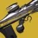 | 虚空榨取 本影食物 ↑冲击支撑 | 虚空适配脉冲步枪。 造成 27 次命中按不稳定 → 虚弱 → 压制的顺序榨取虚空减益。 命中受虚空减益影响的战斗人员，或自己被施加虚空减益，会立即榨取该减益并进入虚空榨取模式充能。 虚空榨取模式充能： 每次命中充能 1.3%（76 次命中）。命中受虚空减益影响的战斗人员充能 16.7%（6 次命中）。 击杀受虚空减益影响的战斗人员，或自己被施加虚空减益，立即充满。 榨取到的虚空减益在收枪后保留。自己施加的减益不能用于充能。 充满后长按填装键激活虚空榨取，持续 15[10] 秒。 命中施加所榨取的虚空减益，伤害提高 20%。 获得虚空增益时填满弹匣。靠击杀重新触发吞食同样填满弹匣。 ↑催化剂：提供「冲击支撑」Perk。 |
| 死亡信使 | 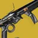 | 三生视觉 基本法则 空特征插槽 ↑还治彼身 | 可塑造多元素波形框架榴弹发射器。 按填装键在电弧、烈日、虚空三种元素间切换。 所选元素在收枪与死亡后保留，默认为虚空。 射弹接触地面时生成 3 道元素波形，每道呈弧形造成 581[?] 点伤害。 元素波形行进 12 米，伤害可[不可]重叠。 ↑催化剂： 提供「还治彼身」Perk。 施加或受到与当前元素相同的元素效果时： 伤害提高 30%[10%]，持续 10 秒。 |
| 精致坟墓 | 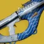 | 叛徒器皿 狂风骤雨 ↑离子葬礼 | 电弧速射融合步枪。 一次点射 16 枚弹束，机瞄时每两枚合并为一枚。 腰射弹束伤害提高 20%。 击杀有几率生成离子轨迹。 = 10%｜及以上 = 100%｜ = 100% 拾取离子轨迹时获得狂风骤雨。 狂风骤雨使下一发伤害提高 100%[7%]，命中施加震颤。 狂风骤雨可在收枪期间触发，并在收枪后保留。 ↑离子葬礼： 拾取离子轨迹时补充 4 发弹药。 |
| 魔鬼之厄 | 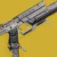 | 迎头赶上 火焰创世 ↑集体行动 | 烈日适配手枪。 击杀生成焰灵。 拾取焰灵时获得「火焰创世：可用」。 「火焰创世：可用」生效期间长按填装键执行一次特殊填装，获得「火焰创世：就绪」。 「火焰创世」的可用与就绪状态在收枪后保留。 火焰创世： 蓄力 0.5 秒后射出持续光线。 以 900 转/分 造成 104[22] 点伤害，精准倍率 1.6×，每次命中施加 20+10 层灼烧，0.95 秒内最多 16 次。 光线击杀触发点燃。 释放火焰创世时填满弹匣。 命中处于悬浮的战斗人员施加 20+10 层灼烧。 击杀处于悬浮的战斗人员触发点燃。 ↑催化剂：提供「集体行动」Perk。 |
| 神圣裁决 | 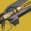 | 审判 苦修 ↑震颤反馈 ↑聚焦狂怒 | 电弧追踪步枪。 伤害为常规追踪步枪的一半。 0.15 秒内连续命中 10[5] 次时： 施加虚弱，使目标受到的伤害提高 15%[15%]，并施加「谴责」，生成一个持续 1.25 秒的精准笼罩。 命中精准笼罩的射击转化为精准命中，但不算作弱点命中。 无法造成精准伤害的武器（如火箭发射器与融合步枪）不受益于精准命中。 神圣裁决的虚弱使其自身伤害提高 30%。 在精准场内停留 3.75 秒的战斗人员受到苦修，承受 1735[520] 点伤害。该数值已计入虚弱。 首次打击后，苦修的计时设为 3 秒。 苦修伤害属于武器伤害，可被增伤提高。 ↑催化剂：提供「聚焦狂怒」与「震颤反馈」Perk。 以 900 转/分 射出持续光线，每次造成 21[7.5] 点电弧伤害，精准倍率 1.38×。 |
| 二象性 | 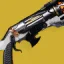 | 压缩枪膛 黑翼之上 ↑二象性催化 | 烈日精密弹丸与精确重击左轮霰弹枪。 一次填满整个弹匣。 腰射打弹丸，机瞄打独头弹。被动提供 +5% 伤害衰减距离。 腰射｜散射 12 枚弹丸，每枚造成 104[?] 点伤害，精准倍率 1.1×。 机瞄｜射出一枚精准弹头，造成 1081[?] 点伤害，精准倍率 1.75×。 一次射击造成弹丸击杀或 10 次弹丸命中，获得 1 层黑翼之上，持续 10.5 秒，最多 3 层。 重新触发黑翼之上会刷新时长。 独头弹的精准命中把黑翼之上的时长刷新到 10.5 秒。 黑翼之上 1 层 = 弹丸精准伤害 +3.5%[?%]｜独头弹精准伤害 +15.6%[?%]｜+? 填装速度 2 层 = +8.8%[?%]｜+39%[?%]｜+? 填装速度 3 层 = +12.4%[?%]｜+54.7%[?%]｜+? 填装速度 黑翼之上在收枪后保留。 ↑催化剂： 被动提供 +20 射程，弹匣容量 +2（6 → 8）。 |
| 玄武行动之刃 | 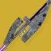 | 远程护盾 ↑冲击支撑 | 可塑造虚空适配偃月。 靠射弹或近战造成 6 次命中后： 长按填装键为下一发准备一面远程护盾，填满弹匣并生成 +1 发弹药。 射弹命中提供 2 层。 远程护盾： 持续 20 秒，本体 2400 点生命值，对战斗人员减伤 85%，对减伤 15%。 远程护盾拦截进出的射弹，隔绝外部伤害。 处在护盾内时：每秒获得 45 点虚空覆盖护盾，持续 10+5 秒，并获得「远程护盾」增益 10 秒。 远程护盾增益｜+? 操控性、+? 填装速度，武器伤害提高 5%。留在护盾内会刷新时长。 与「圣人 14 号的头盔」联动｜远程护盾可按相同条件触发圣人的压制爆发。 ↑催化剂：提供「冲击支撑」Perk。 |
| 青龙协同之刃 | 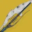 | 闪电追踪弹 ↑涡流电流 | 可塑造电弧速射偃月。 靠射弹或近战造成 6 次命中后： 长按填装键为下一发准备一枚闪电追踪弹，填满并溢出弹匣 +1，生成 +1 发弹药。 射弹命中提供 2 层。 闪电追踪弹追击 32 米内最近的战斗人员，造成 1634[?] 点伤害，施加震颤，并在接触时释放连锁闪电。 连锁闪电在 10 米内最多波及 4 名战斗人员，每名造成 65 点伤害。 ↑催化剂：提供「涡流电流」Perk。 |
| 朱雀意图之刃 | 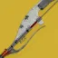 | 恢复炮台 ↑治疗弹匣 | 可塑造烈日攻击型偃月。 靠射弹或近战造成 6 次命中后： 长按填装键为下一发准备一座恢复炮台，填满并溢出弹匣 +1，生成 +1 发弹药。 射弹命中提供 2 层。 恢复炮台持续 9 秒，每 3 秒向 30 米内未满生命值的自己与盟友释放一枚治疗导引体。 一座炮塔一生最多释放 3 枚治疗导引体。 治疗导引体在 7.5 米半径内提供 1 层治愈与 1 层恢复，持续 4+2[3+1.5] 秒。 持有者装备「火焰之触」时（且只对持有者生效）｜导引体改为提供 2 层治愈与 2 层恢复，持续 4+2[?+?] 秒。 ↑催化剂：提供「治疗弹匣」Perk。 |
| 故我在 | 光能聚集 波形刀剑框架 超凡决斗者 ↑超凡钢铁 | 特殊弹药刀剑。 掉落时随机带一种刀剑框架与一条异域内在 Perk。伤害属性不影响 Perk 伤害。 击杀额外提供 2.5% 光超凡能量与 2.5% 暗超凡能量。 处于超凡期间： 伤害提高 44%，+50 充能效率。 异域内在效果（狼群弹药、纯五度、电弧导体、意外缓刑等）改为伤害提高 20%。 造成任何刀剑伤害都会触发棱镜的手雷回复加速。 每次击杀额外延长超凡持续时间 ?%。 ↑超凡钢铁： 造成棱镜手雷命中时 +3[+1] 发弹药。 弹药生成绑定在每种棱镜手雷的特定部位上，待测。 | |
| 故我在（任意元素） | 光能聚集 狼群弹药 | 光能聚集： 击杀获得 1 层光能聚集。 光能聚集提供约 +10% 突进距离、+? 防御抗性与 +? 防御持久。 收起该武器消耗全部层数，每层提供 10% 手雷技能能量、近战技能能量与职业技能能量。 狼群弹药： 地面充能重击为「传说」刀剑与其他持有故我在的人提供集群猎人，持续 10 秒。 狼群弹药在生成点附近松散释放，追踪战斗人员，造成 30[11] 点直击伤害与最高 64[23] 点爆炸伤害。 狼群弹药计为与刀剑同元素的武器伤害，可被增伤 Perk 与增益提高。狼群弹药命中计为刀剑命中。 地面与空中充能轻击释放 1 枚狼群弹药，地面充能重击释放 3 枚。 空中重击不释放任何狼群弹药。 铸造者：在射弹接触区域附近释放 3 枚狼群弹药。 轻质与适配：对触发集群猎人的那次重击无效；集群猎人生效期间的重击向前释放 3 枚狼群弹药。 涡流：重击动作结束时释放 3 枚狼群弹药。 波形：在冲击波末端释放 3 枚狼群弹药。追踪打击不释放狼群弹药。 被动提供 +20 敏捷，以及 6.25% 前向移动速度加成。 | |
| 故我在（电弧元素） | 电弧导体 风暴使者 | 故我在的续篇，只列电弧元素版本才有的 Perk。 电弧导体： 充能重击提供电弧导体，持续 6 秒。 电弧导体提供 50%[15%] 电弧伤害抗性。 生效期间向 ? 米内的战斗人员释放连锁闪电。 连锁闪电每 0.25 秒造成 171[26] 点电弧伤害。对同一目标的重复打击每 1.5 秒一次。 闪电在伤害缩放上按刀剑射弹处理。收枪即移除该增益。 被动提供 +20 敏捷，以及 6.25% 前向移动速度加成。 风暴使者： 约 3 秒内造成 3 次击杀时： 召下一道聚焦雷击，1.1 秒后造成伤害，再过 0.5 秒接一轮落雷。 聚焦雷击在 7 米内造成最高 382[?] 点伤害，最低衰减至 0%。 落雷齐射在目标上方呈 X 形释放 4 道闪电，在 5 米内造成最高 426[?] 点伤害，最低衰减至 25%。 每轮齐射对同一名战斗人员只能造成一次伤害。精准命中计数在收枪时清零。 | |
| 故我在（烈日元素） | 纯五度 神圣之焰 | 故我在的续篇，只列烈日元素版本才有的 Perk。 纯五度： 造成 5 次命中在战斗人员身上附着一枚爆炸物，在 5 米内造成最高 237[64] 点伤害，最低衰减至 30%，并施加 40+20 层灼烧。 由纯五度施加的灼烧伤害提高 41.7%，超凡期间进一步提高到 78.5%。 被动提供 +20 敏捷，以及 6.25% 前向移动速度加成。 神圣之焰： 充能重击命中为战斗人员施加神圣之焰。 受神圣之焰影响的战斗人员在受到轻击或死亡时爆炸，在 5 米内造成最高 136[?] 点伤害。 神圣之焰的爆炸不吃故我在的超凡增伤。 | |
| 故我在（虚空元素） | 意外缓刑 类虫机器人榴弹 | 故我在的续篇，只列虚空元素版本才有的 Perk。 意外缓刑： 充能重击在周围释放多枚土卫十三弩弹，每枚造成最高 68 或 117[83] 点爆炸伤害。伤害是随机的。 攻击型：向前散开 8 枚。 铸造者：在射弹接触区域附近朝自己方向落下 6 枚。 轻质：在身前呈弧形释放 7 枚。 涡流：在自己周围射出 10 枚。 波形：在波形末端生成 8 枚。 被动提供 +20 敏捷，以及 6.25% 前向移动速度加成。 类虫机器人榴弹： 击杀生成一台类虫机器人，追击战斗人员并在靠近时引爆，在 3 米内造成最高 284[?] 点伤害，最低衰减至 45%。不造成自伤。 | |
| 爱莲娜之誓 | 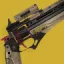 | 杀人目光 一见即死 ↑慷慨 | 特殊弹药烈日手炮。 射出一发穿盾子弹，造成 674[77] 点伤害，精准倍率 1.6×。 打破烈日护盾或屏障勇士的护盾时触发点燃。 处于超能中的视为带有与其超能同元素的护盾。 对屏障勇士伤害提高 67%。 该点燃对屏障勇士的伤害同样提高 67%。 一见即死使首次机瞄射击伤害提高 32.5%，并在机瞄时高亮目标。 精准命中与命中战斗人员护盾可维持一见即死。 停火 3 秒后一见即死重新激活。 被动提供 +3 弹匣容量（6 → 9）与「自动填装枪套」的等效 Perk。 |
| 不祥之兆 | 腐化核合成 忠诚飞蛾 ↑狂暴上头 | 电弧飞蛾榴弹发射器。 无需填装。飞蛾计为武器伤害。 命中积攒 25% 狂暴值，逐步提供最低 0.6× 射速恢复延迟。 重伤时狂暴值直接拉满。 充能在 9.5 秒内衰减。重伤期间不衰减。 造成一次击杀，或在 ? 秒内造成 2 次直击伤害时： 生成一只忠诚电弧飞蛾，追击最近的战斗人员并接触引爆。 电弧飞蛾在 7 米内造成最高 596[守护者 31｜构造体 201] 点电弧爆炸武器伤害，最低衰减至 ?%，并致盲。 飞蛾不造成自伤。两只飞蛾之间有 3 秒冷却。 ↑狂暴上头： 击杀提供增幅。 增幅期间命中提供 50% 狂暴值。 射出弧线射弹，造成 422[21] 点直击伤害与最高 355[119] 点爆炸伤害，4.5 米半径内最低衰减至 30%。 装备「守蛾人裹手」时，在电弧飞蛾之外再生成一只忠诚虚空飞蛾，为最近的盟友提供 22.5 点虚空覆盖护盾。 | |
| 战狮 | 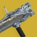 | 迟来满足 物竞天择 ↑客迈拉 | 主要弹药虚空后膛填装榴弹发射器。 提供轻质框架加成。 射出弹跳手雷，约 0.3 秒后可远程引爆。 手雷造成 142[?] 点直击伤害与最高 559[?] 点爆炸伤害，4.5 米内最低衰减至 30%。 直击伤害触发一次不稳定爆发，为 7.5 米内的战斗人员施加不稳定。 造成伤害提供 +70 填装速度，持续 7 秒。 对战斗人员护盾的直击伤害提高 24.5%。 用战狮造成伤害前后 6 秒内造成一次非战狮击杀，即填满弹匣。 ↑客迈拉： +30 填装速度，并提供「客迈拉」Perk。 客迈拉在射击后 3 秒内为动能槽与威能槽武器提供 +100 操控性，精度锥范围缩小 30%。 |
| 引力子长枪 | 黑洞 宇宙奥秘 ↑斩首武器 ↑还治彼身 | 重型点射虚空脉冲步枪。 射速降到 300 转/分，低于重型点射常规的 324 转/分。 一轮点射的第 1 发伤害降低 15%，但无后坐力。 第 2 发伤害提高 35.3%，无伤害衰减，有后坐力。 一轮点射的总伤害与重型点射脉冲步枪相当。 击杀把战斗人员向后抛飞，并触发一次虚空爆炸，在 7 米半径内造成最高 470[100] 点伤害，最低衰减至 0%，同时释放 2 枚追踪虚空球体。 追踪虚空球体爆炸时各造成最高 51[20?] 点伤害。 ↑催化剂： 被动提供 +20 射程、「还治彼身」与「斩首武器」Perk。 | |
| 引力子尖刺 | 时间操控 时间异常 ↑时空校准改装 ↑超凡时刻 ↑维持生计 ↑快速命中 | 可塑造电弧 + 冰影双模手炮。 按填装键在 150 转/分电弧射击模式与 95 转/分冰影射击模式之间切换，并补充 3 发弹药。 7 秒内累计造成 3 次击杀与精准命中，为另一种元素提供超充。 超充进度在收枪与填装后保留，切换射击模式则清空。 超充充满后开始被动流失，每秒 −4.5%，收枪期间照样流失。 电弧超充： 击杀与精准命中召下一道雷击，造成最高 262（2 米内衰减至 0%）加 240（5 米内）= 502[21 + 21 = 42] 点电弧伤害。 每次精准命中消耗 34% 电弧超充。命中冰影水晶同样消耗 34% 并向其召下雷击。 冰影超充： 击杀与精准命中触发一次冰影爆炸，在 7 米内造成最高 126[?] 点伤害，最低衰减至 0%，并在目标两侧生成 2 枚导引体。 导引体飞行 4 米后各生成一块中型冰影水晶，相对目标偏转 45°，呈 ＼／ 形。 每次精准命中消耗 34% 冰影超充。 时空校准改装：同时触发电弧与冰影超充时，伤害提高 20%[?%]，持续 16 秒。 触发该增益没有时限，按最初激活时的顺序再次让两种模式超充即可刷新。 150 转/分电弧模式： 子弹造成 141[42.03] 点伤害，精准倍率 1.85×。 95 转/分冰影模式： 射出爆炸子弹，造成 185[43.2] 点直击伤害与最高 149[21.02] 点爆炸伤害，3 米内最低衰减至 0%，精准倍率 1.85×。 ↑催化剂提供多条可塑造 Perk： 其他可选 Perk 包括「快速命中」「维持生计」与「超凡时刻」。 | |
| 严苛光芒 | 动荡光芒 基本法则 ↑光能之触 | 多元素适配自动步枪。 按填装键在电弧、烈日、虚空三种元素间切换。 所选元素在收枪与死亡后保留，默认为虚空。 伤害衰减下限停在 0.7×，而非自动步枪常规的 0.5×。 子弹在较锐的角度上最多可反弹两次。 至少反弹过一次的子弹伤害提高 100%[35%]。 施加或受到与当前元素相同的元素效果时： 伤害提高 30%[10%]，持续 10 秒。 ↑催化剂： 被动提供 +25 稳定性与「光能之触」Perk。 | |
| 传家宝 | 光弹发射器 赶牛者 ↑传家宝催化 ↑辉耀炽热 | 烈日战斗弩，平衡热量型热能发射器。 被动每秒散去 15 点热量。具备完美排气的平衡热量武器机制。 射出爆炸弩弹，接触即爆，每发产生 130 点热量。 弩弹造成 406[70] 点直击伤害，精准倍率 1.1×，以及最高 539[40] 点爆炸伤害，接触后 4 米内最低衰减至 50%。 机瞄每 0.3 秒产生 30 点热量，并把蓄力档位最多提升 3 档。 蓄力档位提高下一发的伤害与爆炸半径。 蓄力射击： 1 档｜蓄力 0.5 秒，602[71] 点直击伤害，631[41] 点爆炸伤害，5 米内附带 20+0 层灼烧。开火产生 200 点热量。 2 档｜蓄力 1.2 秒，897[80] 点直击伤害，688[49] 点爆炸伤害，6 米内附带 40+0 层灼烧。开火产生 300 点热量。 3 档｜蓄力 1.8 秒，1216[106] 点直击伤害，1032[81] 点爆炸伤害，约 9.5 米内附带 60+0 层灼烧。开火产生 340 点热量。 ↑传家宝催化剂： 蓄力射击的直击伤害按蓄力档位每档施加 20 层灼烧。 对处于灼烧的战斗人员伤害提高 10%。 提供「辉耀炽热」Perk。 | |
| 需求层级 | 指引光环 阿波罗切线 ↑泛光细分曲面 | 烈日轻质战斗弓。 伤害曲线接近精密弓，但用的是轻质拉弓曲线。 造成精准命中或击杀提供 1 层指引光环充能，最多 3 层。 指引光环充能在收枪后保留。 指引光环： 满 3 层时腰射一发满蓄力箭矢即可布下。 光环持续 20 秒，并转向面朝布下者。全场最多同时存在 3 个指引光环，每人只能有 1 个。 箭矢每穿过一个指引光环就释放一批爆炸追踪射弹。 精准命中会把追踪射弹引向被命中的战斗人员。 弓箭至少要半蓄力才能释放追踪射弹。 追踪射弹： 追踪射弹的伤害与数量随来源而变，但一律在 4 米内施加 15+5 层灼烧，并在 4 米内保底 20% 伤害。 追踪射弹伤害计为与武器同元素的爆炸伤害，可被武器增益与激涌提高。激涌必须与武器元素相同。 追踪射弹可受益于不稳定弹药、解缚弹药等效果。 需求层级释放 3 枚追踪射弹，每枚造成最高 193[15?] 点伤害。 ↑泛光细分曲面：布下指引光环或用追踪射弹命中时： 腰射精度锥范围 −40%，蓄力时长倍率 0.5×，+100? 填装速度，0.?× 填装时长倍率，持续 5 秒。 再次用追踪射弹命中或重新布下指引光环会刷新时长。 主要弹药弓箭（含未列出的异域装备）释放 2 枚，每枚造成最高 138 点与武器同元素的伤害。帝喾预言腰射释放 3 枚。 三体坐观者 = 3 × 179｜碎愿者 = 2 × 167｜深埋血脉 = 2 × 120｜传家宝 = 2 × 40 弩 = 2 × 153（同元素）｜利维坦之息 = 2 × 18 暗影箭矢：莫比乌斯箭袋 = 每轮 3 × 136｜暗影箭矢：狩猎陷阱 = 每次施放 6 × 136 暗影箭矢的追踪射弹计为虚空超能伤害，不吃武器增益，只吃超能增益。 | |
| 破冰者 | 无需背包 破冰者 ↑破冰 | 烈日攻击型狙击步枪。 没有备用弹药，只有一个自动补满的弹匣。 用其他武器或技能造成击杀与助攻会生成弹药。 = 每 2 次击杀 +1 发｜ = +2 发｜及以上 = +3 发｜ = +? 发 非精准击杀，或碎裂一块冰影水晶，触发一次烈日爆炸，在 7 米内造成最高 453[40] 点伤害，最低衰减至 50%。 造成精准击杀或碎裂一名被冻结的战斗人员触发点燃。 ↑破冰： 命中受冰影减益影响的战斗人员生成 +1 发弹药： 每约 10 秒内首次命中必定生成弹药，其后每隔一次命中生成一发。 造成 789[142] 点伤害，精准倍率 3.5×。 | |
| 冰霜巨人 | 充能射击 盾牌迷途 ↑逼入绝境 ↑辉耀炽热 | 烈日烤炉式融合步枪。 射出一枚追踪爆炸射弹，接触即爆。 射弹造成 1184[?] 点直击伤害与最高 269[?] 点爆炸伤害，7 米内最低衰减至 0%。 爆炸留下一片燃烧区域，每 0.25 秒造成 46[8] 点伤害，最多 7 次。 ↑催化剂： 提供「逼入绝境」与「辉耀炽热」Perk。 | |
| 帝王蝶 | 毒化箭矢 速射瞄准 ↑不屈 | 虚空轻质战斗弓。 提供轻质框架加成。 完美蓄力的箭矢使战斗人员中毒。 完美蓄力的精准命中触发一次毒爆，使 5 米内的战斗人员中毒。 中毒： 施加 0.55 秒后开始造成伤害。 每 0.25 秒造成 70[2.5] 点虚空伤害，1.35 秒内最多 6 次，合计 420[15] 点伤害。 ↑催化剂： 被动提供 +30 稳定性、+20 填装速度与「不屈」Perk。 | |
| 北极星 | 星光光束 电弧校准 ↑超充矩阵 | 主要弹药点射电弧追踪步枪。 腰射｜变为适配追踪步枪，造成 34[?] 点伤害，精准倍率 1.35×。 伤害为特殊弹药适配追踪步枪的 80%。 电弧校准充满后长按填装键即可快速激活。 再次长按填装键可取消电弧校准，保留剩余充能。 造成电弧命中为电弧校准充能。 腰射模式 = 1%｜机瞄模式 = 3%｜非北极星的电弧伤害 = 1% 电弧校准： 触发时自动填满弹匣，后坐力降低约 75%。 每秒流失约 14% 能量，7 秒后结束。收枪期间照常流失。 腰射命中施加震颤。 机瞄使流失速率降低 67%，降到每秒 5%，最长可持续 20 秒。 ↑超充矩阵： 增幅期间： +? 填装速度、+10? 瞄准辅助，机瞄移动速度惩罚降低 ?%。 | |
| 狼王 | 霰弹发射器 狼群出动 ↑尖牙与利爪 | 烈日点射霰弹枪。 一次填满整个弹匣。 以短射程 5 发点射开火。 机瞄时： 每发子弹造成 147[21] 点烈日伤害，精准倍率 1.8×。 腰射时（狼群出动）： 每发子弹造成 204[39.9] 点烈日伤害，精准倍率 1.56×。 −? 射程，0.4?× 射速恢复延迟，精度锥范围 +200?%。变为全自动。 ↑尖牙与利爪。被动提供 +20 稳定性、+60 填装速度与 0.85× 填装时长倍率： 腰射｜命中施加 10+5 层灼烧。两次施加之间有约 0.5 秒冷却。 机瞄｜击杀触发一次灼烧爆炸，为约 8 米内的战斗人员施加 30+10 层灼烧。 由狼王施加的灼烧伤害提高 53%，且可被武器增益提高。 | |
| 洛伦兹驱动器 | 拉格朗日瞄具 电磁异常 ↑跃迁驱动器 | 特殊弹药虚空精密线性融合步枪。 50 米内有至少 3 名非以下档位的战斗人员时： 锁定最远的那名，穿墙标记[高亮]，直到其被击杀或距离超过 80 米。 被标记的战斗人员死亡时生成一枚遥测规律。 两次标记之间有 7 秒冷却。 遥测规律： 拾取物，提供 +1 发弹药，落地后最多存在 60 秒。 遥测规律层数在死亡时清空。 拾满 3 层遥测规律时｜获得拉格朗日瞄具 30 秒与 +6 发弹药。 再拾取遥测规律会把时长刷新到 30 秒。 拉格朗日瞄具提供 50%[87.5%] 增伤、+30 操控性与 +35 填装速度。 拉格朗日瞄具生效期间对的精准倍率降到 3.44×。 精准击杀触发一次内爆，把 9[?] 米内的轻质量战斗人员拉近、把重质量的推开，随后爆炸，造成最高 341[?] 点伤害。 ↑跃迁驱动器： 举起洛伦兹驱动器时被动提供增强雷达。 处于 3 层遥测规律时，任何击杀都会触发内爆。 射出一枚精密弹束，造成 506[132] 点虚空伤害，精准倍率 3.44×[4.3×]。 | |
| 冷酷无情 | 守恒动量 乘胜追击 ↑治疗弹匣 | 烈日高冲击力融合步枪。 命中提供 1 层守恒动量，持续 5 秒，最多 15 层。 再次命中会刷新时长。该增益在填装后保留。 守恒动量： 降低充能时间与伤害。 起始为 0.93× 充能时间倍率、伤害降低 0.84%。 15 次命中（3 轮点射）后降到 0.2× 充能时间倍率（216 毫秒）、伤害降低 11.93%。 击破战斗人员护盾： +20 稳定性， +20 操控性， +20 填装速度，持续 10 秒。 刀剑获得 +20 防御抗性。 击杀提供 0.66× 填装时长倍率，持续 6 秒。 击杀后 6 秒内完成一次填装时： 伤害提高 50%，持续 4.5 秒。 该增伤在收枪后保留。 ↑催化剂： 被动提供 +40 射程、+40 稳定性与「治疗弹匣」Perk。 | |
| 极星长枪 | 纯五度 禅意时刻 ↑蜻蜓 | 烈日高冲击力斥候步枪。 精准命中补充 1 发弹药。 造成 4 次精准命中备好一发爆炸烈日弹，在 4 米内造成最高 215[78] 点伤害，最低衰减至 0%，并施加 40+20 层灼烧。 备好爆炸弹后 6 秒内填装或不开火会清空精准命中计数。该计数在收枪后保留。 ↑催化剂： 提供「蜻蜓」Perk。 | |
| 普罗米修斯透镜 | 棱镜炼狱 烈焰回馈 ↑辉耀炽热 | 烈日追踪步枪。 持续扣扳机 0.45 秒后： 生成一片不断扩张的灼烧领域，4 秒内扩张到 1 米半径。 灼烧领域每 0.1 秒造成 19[6] 点伤害。 1.5 秒内累计造成 20 次伤害（含灼烧领域）时： 施加 20+10 层灼烧。 由普罗米修斯透镜施加的灼烧伤害提高 15.5%。 击杀补充 75 发弹药。 ↑催化剂： 被动提供 +20 稳定性、+20 操控性与「辉耀炽热」Perk。 | |
| 改造版猩红死命 | 救赎 倒置关系 ↑援助之手 | 烈日高冲击力脉冲步枪。 使用自动步枪的后坐力动画。持有者已有 10 层「各就各位」时，2 层治愈降为 1 层。 用武器击杀时： 获得 2 层治愈、+100 填装速度与 0.8× 填装时长倍率，持续 ? 秒。 击杀后 ? 秒内完成填装，为 ? 米内的盟友提供 ? 层治愈。 命中提供操控性、受击抖动抗性与移动速度加成，持续 3 秒，最多 6 层。 1 层 = +? 操控性｜?% 抖动抗性｜移动速度 +?% 2 层至 6 层的具体数值待测。 护盾生命值越低，伤害越高。 护盾生命值 低于 114 时 +10%[2%]｜低于 60 时 +20%[4%]｜为 0 时 +40%[6%]。 ↑援助之手： 用武器造成 2[1?] 次击杀获得「猩红死命：充能」。 击杀计数与该增益都在收枪后保留。 「猩红死命：充能」生效期间用武器击杀时： 触发一次治疗爆发，并在自己头顶生成一枚恢复球。 治疗爆发为约 7.5 米内的盟友提供 2 层治愈。恢复球提供 2 层恢复，持续 4+2 秒。 持有者因治愈有冷却而不吃治疗爆发，但能吃到恢复。 | |
| 赴险者 | 电弧导体 超导体 ↑连锁反应 | 电弧适配微型冲锋枪。 受到电弧伤害激活电弧导体，持续 6 秒。 再造成直击伤害击杀可把时长延长 +3 秒，最长 6 秒。 该增益可在收枪期间激活，并在收枪后保留。 电弧导体： 开火有约 33% 几率填满弹匣。 伤害提高 10%，+100 操控性，50%[15%] 电弧伤害抗性。 0.2 秒内造成 2 至 3 次命中使战斗人员释放弱连锁闪电。 弱连锁闪电对 8 米内最近的战斗人员造成 21[?] 点伤害。 被弱连锁闪电命中的战斗人员再释放强连锁闪电，造成 28[?] 点伤害。 强连锁闪电最多在 4 名战斗人员之间跳跃，只锁定 8 米内且 0.33 秒内未被强连锁闪电击中的目标。 ↑催化剂： 被动提供 +30 射程与「连锁反应」Perk。 连锁反应：目标爆炸，在 3 米半径内造成最高 114[?] 点电弧伤害。 连锁反应可以自行触发电弧导体。 | |
| 毁灭雕像 | 蜕变 进化 ↑解构 | 虚空适配追踪步枪。 固有对 PvE 有相对传说追踪步枪 1.4× 的加成。 击杀把战斗人员坍缩成蜕变圆球，自带 30 发弹药。球体在地面最多留存 30 秒。 蜕变圆球是可拾取物，能使用轻击、重击与格挡／汲取。丢下蜕变圆球会立即使其消失。 弹药按每秒 1 发被动流失。攻击或格挡期间暂停流失，直到攻击动作结束或不再格挡。 蜕变圆球： 计为通用虚空武器，其伤害可被武器增伤增益、活动激涌与其他通用虚空增伤提高。 也能通过不稳定弹药施加不稳定。 球体不会触发、也不受任何与近战技能、虚空技能、追踪步枪或武器激涌模组相关的效果影响。 轻击｜向前突进，造成 270[150] 点伤害，使战斗人员迷失方向，消耗 1 发弹药。空中攻击伤害降低 25%。每秒可攻击两次。 重击｜把球体砸向地面引爆，造成 1350[守护者 300｜构造体 1500] 点无衰减伤害，并为约 5 米内的战斗人员施加压制。 伤害与剩余弹药无关。 格挡｜在 ? 米半径内展开一片汲取领域，每 0.3 秒造成 28[12] 点伤害，每命中一名战斗人员回复 5 点生命值。 格挡期间提供 80%[50%] 伤害抗性并免疫击退。领域内的战斗人员会迷失方向。 弹药按每 0.25 秒 1 发流失，最后 3 发改为每 0.5 秒 1 发，直到只剩 1 发。 剩 1 发弹药时格挡会施加「变形术」，每 0.7 秒造成越来越高的自伤，直到停止格挡或死亡。 自伤每跳上限 100 点，无视全部伤害抗性，时间够长会直接致死。 ↑解构： 用蜕变圆球造成击杀，或对及以上造成伤害时： 伤害提高 30%[15%]，持续 7 秒。 | |
| 焚天者誓约 | 重击步枪 帝国效忠者 ↑辉耀炽热 ↑燃烧野心 | 烈日高冲击力卡巴尔重击步枪。 腰射｜射出弧线射弹，造成 43[22] 点直击伤害，精准倍率 2.97×，以及在 3.5 米半径内最高 55[22] 点溅射伤害，最低衰减至 0%，并施加 5+5 层灼烧。 机瞄｜射出即时命中的爆炸射弹，在 3 米内造成上述伤害。 对卡巴尔战斗人员伤害提高 11%，并可穿透方阵士兵的护盾。 ↑催化剂： 被动提供 +20 填装速度、「辉耀炽热」与「燃烧野心」Perk。 燃烧野心在第 6 次直击伤害时施加灼烧。连续全自动腰射命中 10 次（装备「骨灰」时 6 次）可累计到 100 层灼烧。 | |
| 杀手之牙 | 夜誓之视 穿心者 ↑全面提升 ↑级联点 ↑冲击支撑 ↑顺畅换弹 | 可塑造虚空精确重击框架霰弹枪。 一次填满整个弹匣。 造成击杀或拾取虚空裂口，获得夜誓之视 7 秒与真视 3 秒。 该增益在收枪后保留。? 米内同样装备杀手之牙的盟友在你击杀时也能获得。 夜誓之视生效期间： 精准伤害提高 15%，+? 填装速度。 子弹施加虚弱，最多弹跳 4 次，追踪更强，代价是伤害降低 18%。 每 4 秒补充 2 发弹药。 射出独头弹，造成 638[?] 点伤害，精准倍率 1.75×，接触时释放 7 枚会弹跳的追踪子弹。 子弹造成 99[5.03] 点虚空伤害，最多弹跳 3 次，不受伤害衰减影响。 子弹第 1 次弹跳后伤害降低 18%，其后每次弹跳降低 42.5%。 直接命中战斗人员时，每一枚子弹都会计为一次命中。 子弹弹跳后可在朝向弹跳方向的约 45° 锥形内转向约 5 米内最近的战斗人员。 子弹接触表面时，转向角度扩大到 360°，对 5 米内的战斗人员生效。 对堕落者与嗤魅战斗人员伤害提高 10%。 ↑催化剂： 可选装「冲击支撑」「全面提升」「级联点」「顺畅换弹」的等效 Perk。 | |
| 隐秘追猎 | 凯德的复仇 狙击兵 ↑幸运的一击 | 烈日适配狙击步枪。 黄金枪模式充满后长按填装键施放，填满弹匣并生成 3 发弹药；装备「星界夜鹰」时只生成 1 发。 造成精准命中与拾取能量球为黄金枪模式充能。 精准命中 = 16.7%｜能量球 = 8.34% 超能充能可在收枪期间获得，并在收枪与死亡后保留。集结旗可直接充满黄金枪模式。 黄金枪模式： 对造成 666[238] 点伤害，精准倍率 2×。 连续精准命中提高伤害。 第 2 发伤害提高 45%，第 3 发提高 90%。 对打满 3 次精准命中合计 5820 点伤害。 被压制会中断黄金枪模式。黄金枪模式在任何判定上都不算超能技能。 狙击兵被动提供 +? 瞄准辅助、0.?× 机瞄时长倍率与 ?% 受击抖动抗性。 狙击兵的加成提高到 +? 瞄准辅助、0.?× 机瞄时长倍率、?% 抖动抗性、瞄准辅助衰减距离 +18%，精度锥范围 −60?%。 「星界夜鹰」会改变黄金枪模式。 弹药降到 1 发。 对造成 ???[1061] 点精准伤害。 以打满 3 次精准命中计，「星界夜鹰」相对基础版增伤 ?%。 ↑催化剂：提供「幸运的一击」Perk。 | |
| 烈日弹丸 | 烈日灼烧 烈日爆炸 ↑顺畅换弹 | 烈日 150 转/分 手炮。 固有高爆载荷。 射出爆炸子弹，造成 71[24] 点直击伤害，精准倍率 2.68×，以及最高 83[24] 点爆炸伤害，3 米内最低衰减至 0%。 直接命中战斗人员会让其高亮 1 秒。 击杀使目标爆炸，在 6 米半径内造成最高 432[160] 点伤害，最低衰减至 40%，并施加 10+5 层灼烧。 ↑催化剂： 被动提供 +30 射程、+20 稳定性与「顺畅换弹」Perk。 | |
| 同调 | 革命 动态充能 ↑涡流电流 ↑电弧冥河 | 电弧速射斥候步枪。 长按填装键切换到电弧追踪弹模式。 电弧追踪弹模式： 射出追踪弹束，在 3 米半径内造成最高 76[守护者 50｜构造体 25] 点溅射伤害，最低衰减至 0%，代价是 2.6× 射速恢复延迟。 追踪瞄准辅助锥内的战斗人员。不造成自伤。 切换到电弧追踪弹时，按动态充能的层数补充等量弹药。 精准命中与击杀提供 1 层动态充能，最多 15 层。 每层动态充能为电弧追踪弹模式提供 30%[较复杂：3 层 = 3 层强度，7 层及以上 = 2 层强度｜构造体 30%] 增伤与更大的溅射半径。 10 层 = 4 米半径｜20 层 = 7 米半径 动态充能层数在收枪后保留。 电弧追踪弹命中提供 2 层电光充能，且只要动态充能至少有 1 层，就能放电。 动态充能达到 10 层及以上时，电光充能的获取提高到 3 层。电弧追踪弹不吃「频率火花」的 +1 电光充能。 由电弧追踪弹命中触发的放电计为斥候步枪主要武器伤害，可被战斗人员缩放与武器增益同时提高。 ↑电弧冥河： 动态充能上限提高到 20 层。 「风暴要塞」（以及「光焰之井」的施法者）会让放电同时发生两次，一次计为武器伤害，另一次是常规放电。 与「闪电过载」的 50% 增益叠乘。 站在风暴要塞的壁垒后施放光焰之井，会触发 1 次同调放电与 2 次常规放电。 被动提供 +10 操控性、+10 填装速度与「涡流电流」Perk。 | |
| 泰拉巴 | 贪食野兽 无尽食欲 ↑刺客野心 | 烈日攻击型微型冲锋枪。 贪食野兽充满后长按填装键即可快速激活。 贪食野兽充能： 每次造成伤害提供 2%[5%] 充能。 命中处于灼烧的战斗人员提供 3%[6.7%]。 击杀提供 10%。 每受到一次伤害提供 1%。 收起泰拉巴会清掉当前充能的 50%（例：70% → 20%）。 贪食野兽效果：激活时立即填满弹匣。 非精准伤害提高 187%[120%]，精准伤害提高 99%[52.7%]，0.8× 射速恢复延迟。 +100 操控性、+100 填装速度、0.8× 填装时长倍率。 +100 敏捷，滑铲距离由 6.5 米 提高到 8.5 米。 50%[15%] 烈日伤害抗性。 贪食野兽持续 8 秒。每次命中延长 0.05[0.06] 秒。 剩余时长 ≤3 秒时，命中与战斗人员每次延长 0.3 秒。 ↑催化剂：提供「刺客野心」Perk。 | |
| 土卫十三 | 意外缓刑 预兆脉动 ↑财力雄厚 ↑先知怒火 | 虚空黏性融合步枪。 射出 7 枚黏附式近炸弩弹，每枚在 4 米内造成最高 236[47] 点虚空伤害，最低衰减至 12.5%。 弩弹在表面最多留存 5 秒，战斗人员进入 3 米内即自动引爆，无法被摧毁。 4.5 秒内造成 3 次虚空击杀触发预兆脉动，填满土卫十三的弹匣。 土卫十三造成的击杀按 2 次计。 ↑先知怒火： 预兆脉动触发 3 次后，长按填装键拍击土卫十三，预备先知怒火。 下一次直击伤害在目标上方开启一道传送门，在 2.25 秒内释放 22 枚土卫十三弩弹。 ↑财力雄厚： 被动提供 +3 弹匣容量（4 → 7）与 +40 弹药生成。 | |
| 细分曲面 | 属性：不可判定 属性：不可约简 ↑属性：不可避免 | 与手雷同元素的适配融合步枪。 始终采用当前手雷技能的元素，不受任何覆盖影响。 击杀提供 20%手雷技能能量，并额外提供 2.5% 光超凡能量与 2.5% 暗超凡能量。 按填装键消耗一次手雷技能充能，把下一发变成与手雷同元素的爆炸射弹。 转换耗时 2.3 秒，并填满弹匣。 消耗一次手雷技能充能即可使用超凡手雷。使用「烈焰之歌」的烈焰火苗无需消耗。 爆炸射弹： 行为类似火箭，接触即爆。造成 250[57] 点直击伤害与最高 3552[166] 点爆炸伤害，7 米处衰减至 25%。 击杀引爆战斗人员，触发一次与手雷同元素的连锁反应爆炸。 超凡期间伤害提高 19%。 已转换的爆炸弹可以收枪保留。 ↑属性：不可避免： 爆炸射弹接触后约 0.2 秒触发一次延迟引爆。 接触点 10 米内的战斗人员受到最高 188[10] 点伤害，并按手雷技能的元素被施加相应的元素减益。 电弧 = 致盲｜烈日 = 70+10 层灼烧，且灼烧伤害提高 5%｜虚空 = 虚弱 6[2.5] 秒。 冰影 = 80 层减速，持续 6+1[0.5] 秒。｜缚丝 = 割裂 5+2.5 秒。 | |
| 第四骑士 | 迅疾雷霆 猛烈抨击 ↑名为死神 | 电弧 300 转/分 全自动霰弹枪。 全自动射出 12 枚弹丸，每枚造成 84[?] 点电弧伤害，精准倍率 1.1×。 击杀补充弹药。 = 1 发｜ = 0 发？｜及以上 = 5 发 0.5 秒内的每一次连续射击伤害更高、弹丸散布更大。 第 2 发｜伤害提高 17.7%，弹丸散布 +25%。 第 3 发｜伤害提高 36.5%，弹丸散布 +33%。 第 4 发｜伤害提高 56.5%，弹丸散布 +33%。 第 5 发｜伤害提高 77.5%，弹丸散布 +33%。 ↑名为死神： 被动提供 +40 填装速度与 +1 弹匣容量（4 → 5）。 | |
| 蝎狮 | 飞空之牙 俯冲利爪 ↑飞行怪物 | 虚空轻质微型冲锋枪。 提供轻质框架加成。 站在地面时命中为反重力推进器充能 1.5%，击杀充能 10%。 在空中停留至少 0.5 秒后造成伤害时： 激活悬停模式 3 秒，完全免除空中惩罚，并允许以固定 5.5 米/秒 在空中水平移动。 长按填装键执行一次特殊填装可快速取消悬停模式。收起蝎狮同样会取消。 悬停模式生效期间： 命中消耗 1% 反重力推进器，时长 +0.3 秒，最长 3 秒。战斗人员瞄准穿戴者的精度下降。 每 0.6 秒伤害提高 10%[2%]，6 秒后最高提高 100%[20%]。 离开悬停模式即清空增伤。 ↑飞行怪物： 在空中造成击杀，补充 12 发蝎狮弹药，并提供 15 点虚空覆盖护盾，持续 6 秒。 在空中对战斗人员造成 5 次伤害，同样补充 12 发弹药与 15 点虚空覆盖护盾，持续 6 秒。 命中计入前有 1 秒冷却。落地即清空伤害计数。收枪期间照常生效。 | |
| 三度迭代 | 三切面物驱 合并弹药 ↑反常燃烧 | 虚空电池驱动的轻质斥候步枪。 射出一束窄散射的 4 枚虚空射弹，每枚造成 29[14] 点伤害，精准倍率 1.69×。 机瞄不开火时，散射在 1 秒内逐渐压成一发合并弹药。 合并弹药伤害提高 290%[18%]，并为全队高亮该战斗人员 5 秒。 合并弹药仍然是 4 枚虚空射弹，每枚都吃上述增伤。 对被高亮的战斗人员，三度迭代的散射伤害提高 95%[6.7%]，合并弹药伤害提高 30%[6.7%]。 击杀被标记的战斗人员，或用合并弹药造成精准击杀时： 获得虚空隐身 7+3.5 秒与真视 4 秒。 ↑反常燃烧：用合并弹药造成精准击杀时： 目标爆炸（两次），触发一次虚空爆炸，在 8 米内施加虚弱，随后在 5 米内造成最高 140[?] 点伤害，最低衰减至 20%。 | |
| 帝喾预言 | 神圣之焰 因果箭矢 ↑因果箭袋 | 烈日追踪型轻质弓。 腰射蓄力最多锁定 3 名战斗人员，松弦时把 3 支箭分配给全部标记目标。 每支箭造成最高 29[?] 点伤害，命中施加神圣之焰 10[5] 秒。 受神圣之焰影响的战斗人员在被瞄准射击命中或死亡时爆炸，在 5.5 米内造成最高 295[137] 点伤害，最低衰减至 50%。 完美蓄力的精准命中触发神圣之焰爆炸时，爆炸伤害提高 100%。 ↑因果箭袋： 神圣之焰引爆提供 1 层因果箭袋，持续 5.5 秒，最多 6 层。 因果箭袋提高直击伤害，但不提高神圣之焰的引爆伤害。 施加神圣之焰、引爆神圣之焰，或对未受神圣之焰影响的战斗人员造成伤害，都会刷新因果箭袋的时长。 因果箭袋增伤： 16%｜31%｜49%｜67.5%｜87%｜87% [3.6%｜11%｜12%｜16%｜23%｜23%] | |
| 汤米的火柴盒 | 引燃扳机 散热器 ↑瞬时热情 | 烈日速射自动步枪。 引燃扳机： 首次触发条件是每两发间隔 0.125 秒内连续射出 20 发。 生效期间按住扳机每秒积攒 20% 热量，不开火时每秒流失 25%。 生效期间伤害提高 99%[50%]，精度锥范围 −3%。 每 0.4 秒从持有者身上抽走 15 点生命值，直到重伤为止。腰射时每跳降为 7.5 点。 该自伤绕过虚空覆盖护盾，也不会削减它。 ↑瞬时热情：引燃扳机生效期间： 武器击杀提供 1 层治愈。 每第 5 发施加 15+5[10+10] 层灼烧。 腰射时： 精度锥范围与精度锥扩张幅度大幅降低。 不吃蹲下带来的 −50% 后坐力；该减免改为开始腰射时触发。若从腰射起就一直按住扳机，减免会延续到机瞄。 | |
| 入侵者 | 不知悔改 涉险而为 ↑狭窄视野 | 电弧适配点射手枪。 击杀后 ? 秒内完成一次填装时： 获得不知悔改，持续 10 秒。 击杀触发条件在收枪后保留。不知悔改则在收枪时移除。 不知悔改： 加长下一轮点射，射出 6 发的加长点射，伤害提高 200%。 靠不知悔改造成的击杀填满弹匣并重新激活该 Perk。这算一次真正的填装，会触发填装类效果，例如催化剂带来的「狭窄视野」。 ↑催化剂： 提供「狭窄视野」Perk。 | |
| 三体坐观者 | 分裂电子 避雷针 ↑叉状闪电 | 电弧精密分裂箭弓。 射出 3 支分裂箭，每支造成 122[?] 点伤害，精准倍率 1.25×。 精准击杀提供避雷针。 避雷针箭矢接触即爆，在极小半径内造成最高 13[10] 点电弧伤害，并释放连锁电流，对 8 米内的战斗人员造成 194[50.3] 点伤害。 避雷针在收枪后保留。 ↑叉状闪电： 提供 +30 蓄力时间。 蓄力时间由 733 毫秒降到 633 毫秒。 避雷针改为由任意电弧击杀触发。 | |
| 叛贼 | 潜藏能量 能量激涌 ↑虚空大师 | 虚空适配手炮。 直击伤害为潜藏能量充能。 普通命中 = 4%｜精准命中 = 8%｜高爆载荷 = +8?%｜击杀 = +25?% 不靠击杀充满，至少需要 9 次精准命中加 1 次非精准命中。 释放力量： 充满后长按填装键强化该武器。强化期间开始填装或收枪可提前结束效果。 填满弹匣，射速提高到 225 转/分，大幅改善腰射精度、稳定性与瞄准辅助，并提供无限弹药，最长 13 秒。 命中施加虚弱 6[?] 秒。 3 秒后转为「压迫能量」，每秒造成约 13 点自伤，直到增益结束。 3 秒内造成 2 次命中时： 3 秒内射出的下一发带高爆载荷。 高爆载荷在 4 米内造成最高 122[?] 点虚空伤害，最低衰减至 50%。 每一发都射出高爆载荷，造成 87[?] 点虚空伤害。 ↑虚空大师： 强化结束时： 获得虚空覆盖护盾，持续 10+5 秒。 护盾量随释放力量的持续时长而定，每生效 1 秒约 3 点，13 秒后最高 40 点。 火箭发射器与微型导弹伤害提高 30%。「危险推力」火箭提高 200%。它就是这么任性。 | |
| 裂波者 | 谐振激光 超充电池 ↑引爆光束 ↑羸弱能量球 | 虚空适配追踪步枪。 按住扳机时： 在低、中、高三档功率之间循环。停火 0.1 秒后循环重置。 低功率造成基础伤害。中功率伤害提高 32.2%[3%]。高功率伤害提高 68.7%[6.25%]。 裂波者的功率循环： 中 0.5 秒 → 低 1 秒 → 高 1 秒 → 中 1.5 秒 → 低 1.5 秒 → 中 2 秒 → 高 1.25 秒 → 低 1.25 秒 → 循环 拾取能量球时： 获得超充电池 10 秒，并填满弹匣。 再拾取能量球把超充电池延长 +10 秒，最长 20 秒。 超充电池可在收枪期间激活，并在收枪后保留。 超充电池： 功率锁定在高档。 不松扳机对同一目标命中 12 次，施加压制 7 秒。 ↑催化剂：+10 射程、+30 弹药生成，以及「羸弱能量球」与「引爆光束」Perk。 | |
| Vex 揭秘者 | 永恒揭秘者 时间无限 ↑精算平衡 | 主要弹药烈日融合步枪。 手感接近高冲击力自动步枪，但只在与融合步枪相关的联动中被算作融合步枪。 在自动步枪模式下以 400 转/分 全自动射出来自另一条时间线的单发融合弹束。 融合弹束造成 66[?] 点伤害，精准倍率 1.8×。 打空弹匣时： 按本轮造成的伤害次数补充 80% 弹药，向上取整。计数在收枪后保留。 至少要造成 9 次命中才会触发补弹，同样向上取整。 与「回转弹药」不同，命中计数没有冷却。 自动步枪模式下的击杀提供超充层数，最多 6 层。 与 = 1 层｜与 = 2 层｜ = 2 层 线性融合超充模式：满 6 层超充时长按填装键切入。 射出线性融合弹，造成 461[168] 点伤害，精准倍率 3.2×。 线性融合的精准击杀触发点燃，且该点燃伤害提高 5%。 每发消耗 2 层超充，一次激活最多打 3 发。 超充在收枪时移除。退出该模式时填满弹匣。 ↑精算平衡： 用武器击杀，或 3 秒内造成 15 次命中时： 自动步枪模式伤害提高 20%，+20? 稳定性，精度锥范围 −20%，持续 5 秒。 该增伤在收枪后保留。 | |
| 维王者之剑 | M1R分布矩阵 永恒漏洞 ↑盗墓者 ↑不动如山 ↑补足神盾 | 可塑造虚空速射偃月。 射弹每命中一枚提供 8% 武器能量。 呈 + 与 x 交替的形状射出 5 枚弹束，每枚造成 138[28.85] 点伤害。 用武器能量格挡时： 按每秒 14 点为自己与 15 米内的盟友逐步提供虚空覆盖护盾，持续 8+4 秒。 对的主要武器与近战伤害独有 50% 抗性，其他偃月只有 30%。 任意覆盖护盾生效期间： 偃月近战攻击伤害提高 20%。 偃月近战击杀把虚空覆盖护盾的护盾值与时长完全补满到 10+2 秒，并提供 100% 武器能量。 对 Vex 战斗人员射弹伤害提高 25%。近战攻击使 Vex 战斗人员迷失方向。 ↑催化剂： 可选装「不动如山」「盗墓者」「补足神盾」的等效 Perk。 |
威能武器
| 武器 | 图标 | 异域 PERK | 说明 |
|---|---|---|---|
| 混乱无序 | 电弧陷阱 即兴弹药 ↑震颤反馈 | 电弧速射榴弹发射器。 发射电弧锚点，附着在地面或战斗人员身上，最长存在 30 秒。场上最多同时存在 6 枚电弧锚点。 相距 15 米以内的锚点之间连出一道通电绊线。已连接的锚点会同时触发。 电弧锚点： 检测到 5 米内有战斗人员即触发，此后 10 秒内每 0.5 秒在 4 米半径内造成 218[35] 伤害，边缘衰减至 30%。 已连接的锚点对触碰绊线的战斗人员每 0.5 秒造成 435[?] 伤害。已连接的锚点只伤害绊线上的战斗人员。 触发 10 秒后或到期时爆炸，在 4 米内造成 223[40] 伤害，边缘衰减至 50%。 ↑催化剂：获得「震颤反馈」Perk。 第 4 次造成伤害时施加震颤，处于增幅状态时为第 3 次。 | |
| 黑色利爪 | 乌鸦之翼 无倦利刃 决斗者之境 ↑反转 | 虚空射弹刀剑。 独特的远程重击： 消耗 3 发弹药与 50% 刀剑能量，射出一枚爆炸射弹，造成 693 × 2 ＝ 1386[456? × 2] 伤害，并在 3 米内施加压制。 用爆炸射弹伤害已被压制的战斗人员时，对其 8 米内的战斗人员施加压制。 任意刀剑能量下都能快速连射两枚射弹。 刀剑能量为 0% 时的射弹攻击造成 455[152] 伤害，只有直击伤害，且只消耗 1 发弹药。 射弹攻击对的伤害提高 30%。 ↑反转：效果不触发。 官方设计意图：命中带有虚空减益的战斗人员时伤害提高 10%／20%／30%，加成随目标身上的虚空减益数量提升，最多 3 层；持续时间不明?。 | |
| D.A.R.C.I | 私人助手 目标锁定 ↑联网瞄准 | 电弧速射狙击步枪。 使用斥候步枪的动作，因而比其他狙击步枪保留更多余光视野。 开镜瞄准同一战斗人员 0.5 秒后： 标记该目标，显示其生命值与护盾百分比、距离以及能量等级信息。 标记期间获得「目标锁定」。 脱离目标后标记再保留 1 秒。只能标记 150 米内的战斗人员。 ↑联网瞄准：并被动提供 +20 稳定性。 「目标锁定」生效期间的命中，为自己以及 15 米内持有非异域狙击步枪的队友提供 1 层「联网瞄准」，持续 10.5 秒，最多 5 层。 为队友叠满 5 层「联网瞄准」时，D.A.R.C.I 自身伤害提高 15%。 联网瞄准各层加成： 稳定性、操控性、辅助瞄准的具体数值待测?。 精准伤害：2.8%｜6.1%｜9.1%｜12.5%｜15.9% 受击抖动抗性各层数值待测?。 目标锁定： 伤害提高 18.35%，精准伤害提高 31.34%，辅助瞄准 +?，后坐力 −50%，精度锥 −50%，受击抖动抗性 50%。 「目标锁定」生效期间命中会施加震颤。 | |
| 死亡使者 | 黑暗救赎 黑暗后裔 ↑固定负载 | 虚空高冲击力火箭发射器。 射出一枚缓慢飞行的虚空球，松开【开火】可在空中引爆，否则触地引爆。 引爆释放 7 枚虚空球，缓慢下坠并追踪战斗人员。 虚空球不造成自伤。 虚空球初始在 ? 米内造成最高 211[224] 伤害，伤害随存在时间提高。 3 秒内线性提升至 +182.5%[47.7%]，达到最高伤害时伤害数字显示为黄色。 ↑固定负载：虚空球的初始伤害提高 63%，达到最高伤害所需时间缩短至 2 秒。 | |
| 命定混沌 | 十六进制 重金属 ↑目标锁定 | 虚空高冲击力机枪。 每第 4 枚「重金属」射弹（即第 16 发）射出一枚「十六进制」射弹，后坐力更大。 每第 2 枚「十六进制」射弹（即第 32 发）施加虚弱。 射出「十六进制」射弹后松开扳机会补充 12 发弹药。 一味优化弹药回补的打法会让虚弱无从触发。 持续按住扳机时： 每第 4 发射出一枚「重金属」射弹，施加不稳定。 ↑催化剂：获得「目标锁定」Perk。 「目标锁定」的计时足够长，能撑到「十六进制」射弹触发弹药回补。 但受上述问题影响，只有连续不停射出 32 发才能真正施加虚弱——这把武器的几条 Perk 互相冲突。 | |
| 龙息 | 复合推进剂 高辛烷值 ↑烈焰术士 | 烈日高冲击力火箭发射器。 用燃料层数强化火箭效果，燃料最低恒为 1 层。 开火消耗全部燃料，并让被动积攒暂停 3 秒。 火箭飞行途中留下燃烧轨迹。 火箭直击时钉入目标，每 0.75 秒触发一次小型爆燃，造成 70[15] 伤害并释放 3 摊燃烧火池。 燃料提高火箭钉入的持续时间，从而灼烧更久、铺开更多燃烧火池，同时提高爆炸伤害。 燃烧火池造成 41[74] 伤害，每 ? 秒在 ? 米半径内施加 40 层（+20）灼烧，持续 ? 秒。 火箭的燃烧轨迹施加 50 层（+20）灼烧。 燃料层数：1｜2｜3｜4｜5 钉入时间：1.5 秒｜2.25 秒｜3 秒｜3.75 秒｜4.5 秒 爆炸伤害提升：0%｜7.1%｜14.3%｜21.4%｜28.6% 燃烧火池总数：3｜6｜9｜12｜15 ↑烈焰术士：被动积攒燃料的间隔缩短到 3 秒，15 秒达到 5 层。（并非 12 秒，因为开火会让积攒暂停 3 秒。） 击杀生成焰灵，拾取之间没有冷却。 每 6 秒被动获得 1 层燃料，24 秒后达到上限 5 层。? 米内的点燃提供 2 层燃料。达到 5 层燃料时补满武器。 | |
| 明日之眼 | 眼观六路 适应性重炮 ↑爆破专家 ↑爆破分配器 | 烈日追踪齐射火箭发射器。 开镜瞄准可标记战斗人员，最多 6 个。 齐射的火箭分摊给全部被标记的目标。 一次齐射击杀 4 个及以上战斗人员时获得「适应性重炮」。 「适应性重炮」生成 1 发弹药，并让下一次完整齐射的伤害提高 50%。 在第六枚火箭射出前收起明日之眼可保留「适应性重炮」。 ↑催化剂：获得「爆破分配器」与「爆破专家」Perk。 每次齐射发射 6 枚火箭，各自在接近战斗人员时爆炸，单枚在约 9 米内造成最高 1015[215] 溅射伤害。 | |
| 法夫纳 | 量子新星 亚原子扭曲 ↑心无旁骛 | 虚空线性融合步枪。 储备弹药充足时长按【填装】触发「量子新星」。 量子新星： 消耗储备中最多 9 发弹药，获得「量子新星」，最长 20 秒，同时补满弹匣。 1 发＝4 秒｜3 发＝8 秒｜6 发＝14 秒｜9 发＝20 秒 收起武器时计时暂停。可重复触发以延长持续时间。 命中造成 368[?] 虚空伤害，精准倍率 3.44×。 命中会撕裂战斗人员，0.75 秒后再造成 3 次 344[?] 伤害（合计 1032）。 一次精准命中合计造成 2297 伤害。 触发时在 10 米内造成 1420[?] 伤害，并施加 30%[?%] 的虚弱，持续 5 秒，与消耗的弹药量无关。 「量子新星」生效期间的命中施加更强的虚弱，使目标受到的伤害提高 30%[?%]，持续 5 秒。 ↑催化剂：获得「心无旁骛」Perk。 | |
| 终局螺旋钻 | 毁灭铭刻锻炉 毁灭铭刻信标 ↑诱导推销 | 烈日布设炮台精密线性融合步枪。 长按【填装】在「建造炮台」与普通线性融合模式之间切换。 处于建造炮台模式时： 开火消耗 3 发弹药，射弹命中处生成一座毁灭铭刻炮台，并把射击模式切换为炮台标记模式。 建成炮台后自动补满弹匣。 毁灭铭刻炮台： 导弹炮台，持续 25 秒，最大索敌距离 70 米，具有 ? 点建筑生命值。 每 2 秒发射导弹，在 4 米内造成最高 359[131] 烈日伤害，优先攻击射程内最近的战斗人员。 炮台会被自己的导弹打掉。 炮台标记模式： 朝地面开火可标记 6 米半径内的战斗人员；朝战斗人员开火则直接标记该目标，持续 30 秒。 标记不消耗弹药，0 发弹药时也能使用。 炮台消失或自身阵亡后标记依然保留。 炮台优先攻击被标记的目标，向其发射 3 连发导弹，每枚每 1.65 秒造成最高 137 × 2 ＝ 274[55 × ? = ?] 烈日伤害。 ↑催化剂：获得「诱导推销」Perk。 | |
| 加拉尔号角 | 狼群弹药 集群猎人 ↑猛狼成群 | 烈日追踪火箭发射器。 火箭爆炸时释放 8 枚追踪集群导弹。 集群导弹的伤害类型与发射它的火箭发射器一致，其伤害不受火箭框架影响。 处在队友 15 米内时： +50 操控性、+50 填装速度，填装时长倍率 0.9×。 开火后： 15 米内的队友获得「集群猎人」，持续 15 秒，为其非异域火箭发射器附上「狼群弹药」。 「集群猎人」在收起武器后依然保留。 ↑猛狼成群：被动 +1 弹匣容量（1 → 2）。 「狼群弹药」击杀会额外释放一枚更快的追踪火箭，伤害提高 126.5%。 「猛狼成群」火箭的伤害以黄色数字显示，并沿用狼群弹药的伤害缩放。 | |
| 大序曲 | 巨人之怒 欧米伽打击 ↑大序曲催化 | 电弧弹丸与导弹发射器。 弹丸发射需要 1 秒蓄力。 弹丸造成 1243[259] 伤害，并提供 1 层「导弹填装」，最多 20 层。 导弹齐射： 积攒至少 1 层「导弹填装」后，长按【填装】切换到齐射模式。 以 5 连发射出追踪导弹，消耗「导弹填装」层数而非弹药。 导弹命中造成 250[52] 直击伤害与最高 888[185] 爆炸伤害。 齐射模式在收起武器后依然保留，只有层数耗尽或阵亡才会退出。 ↑大序曲催化：被动 +20 稳定性、+20 操控性。 导弹命中会致盲战斗人员。导弹击杀会让战斗人员爆炸，在 ? 米内造成最高 ? 伤害。 | |
| 心影 | 掘尸三尺 暗地一击 ↑幽魂漫步 | 虚空射弹刀剑。 地面蓄力重击： 消耗 3 发弹药，获得 6.3 秒的虚空隐身。 向前扇形释放 4 枚追踪虚空球，射程 ? 米，每枚引爆造成 507[363] 伤害。 虚空球没有距离衰减，对额外造成 30% 伤害。 处于隐身状态 0.25 秒后、隐身结束后 2.5 秒内，或在「暗地一击」生效期间击杀时，获得「暗地一击」。 暗地一击： 伤害提高 25%，命中施加 6[3] 秒的虚弱。 击杀提供 6.3 秒的虚空隐身。 ↑幽魂漫步：被动 +6 储备弹药（50 → 56）。 「暗地一击」生效期间移动速度提高 50%?。 | |
| 法定继承人 | 重型投弹器 巨人之甲 ↑军团壁垒 | 烈日速射机枪。 开镜进行预旋，预旋 1.5 秒后才能开火。 生命值全满且完成预旋时： 1 秒内生成一层电弧护盾。 电弧护盾： 耐久为 80 点生命值。护盾耐久未满时，2 秒未受伤害后可在 1 秒内充能恢复。 免疫精准伤害，对动能伤害减伤 50%，对非电弧的元素伤害减伤 15%。 被电弧伤害击破时引爆，对持有者与附近队友造成 130 伤害。 ↑军团壁垒：电弧护盾附带 75%[25%] 减伤。 电弧护盾被击破时补满 50% 弹匣。 | |
| 阿克瑞斯传说 | 透体电光 千里眼 ↑财力雄厚 ↑战嚎炮管 | 电弧弹丸霰弹枪。 填装比射击更快，善用取消填装即可始终保持最高射速。 一次射出 15 枚弹丸，散布极宽，飞行 18 米后消散。弹丸没有距离衰减，可无限穿透战斗人员。 命中地面上[全部]的战斗人员时，额外造成一次 135.2[150] 伤害。 弹匣内至少有 1 发弹药时： 雷达外环的探测距离提高至最远 80 米。 ↑财力雄厚：被动 +40 填装速度、+2 弹匣容量（4 → 6）、+50 弹药生成，并获得「战嚎炮管」Perk。 | |
| 利维坦之息 | 王牌猎人 利维坦之叹 ↑巨型箭袋 ↑弓手节奏 | 虚空巨型弓箭。 满蓄力箭矢造成 800[秒杀] 虚空直击伤害，精准倍率 1.6×，并在命中处产生一次震荡爆炸。 震荡爆炸造成最高 701[秒杀] 虚空爆炸伤害，施加不稳定，并把战斗人员大幅击退。 ↑巨型箭袋：被动 +5 总弹药（9 → 14）、+80 弹药生成，并获得特殊版「弓手节奏」，蓄力时间倍率 0.563×（即 0.75 的平方）。 | |
| 缩影 | 超因果光束 超因果注入 ↑敲打 ↑阻止力 | 动能追踪步枪。 以 900 RPM 射出持续光束，造成 101[?] 伤害，精准倍率 1.35×。 对战斗人员护盾造成大幅提高的伤害。 击杀提供额外超能能量，数值随战斗人员档位提升： 一档｜二档｜三档｜四档｜的具体数值均待测?。 释放超能技能时：补满武器。 超能技能结束时：获得「超因果注入」，伤害提高 20%，持续 20 秒。 「超因果注入」在收起武器后依然保留。 ↑催化剂：获得「阻止力」与「敲打」Perk。 | |
| 千语 | 阿罕卡拉之眼 不测回响 ↑恩宠尽失 | 烈日融合步枪。 射出一道光束，在 0.6 秒内跳动 10 次，并沿途标记 9 个延迟爆炸点，每次跳动初始造成 22[11] 伤害。 最后一次跳动不产生爆炸点。 爆炸点生成 0.7 秒后引爆，各自在 ? 米内造成最高 281[100] 伤害，并施加 10 层（+5）灼烧。 由千语首次施加的灼烧伤害提高 31.6%。 ↑恩宠尽失：每次引爆释放一只堕落追猎者，主动扑向战斗人员，造成 84[?] 直击伤害，外加 22 次持续伤害跳动。 跳动每 0.25 秒造成 13[?] 伤害，持续 5.65 秒，合计 ? 伤害。 同一目标最多同时被约 5 只追猎者附身。 被枯萎囤积直击的战斗人员受到的跳动伤害提高 100%。 与渎职、碎愿者没有联动。 | |
| 救赎之握 | 冰冻大炮 碎裂射击 ↑霜华窃取者 | 冰影榴弹发射器。 蓄力射击生成呈 ▼ 形排列的冰影水晶。 救赎之握生成的冰影水晶被击碎时，在 8 米内造成最高 183[?] 冰影武器伤害，边缘衰减至 60%。 命中处先生成一座小水晶，两座中型水晶呈 V 形展开，再是三座大型水晶斜向排列，其中中间那座位于小水晶后方。 按住【开火】时显示射弹落点预览。 未蓄力射击发射冰影手雷，命中即摧毁冰影水晶。 用未蓄力射击在 ? 秒内接连击碎 3 座水晶可补满弹匣。 一次摧毁大量冰影水晶时不会全部瞬间爆炸，这是出于性能考虑。 对被冻结的战斗人员伤害提高 25%，并必定摧毁冰影水晶。 该增伤与冻结目标的其他增伤叠加。 ↑催化剂：获得「霜华窃取者」Perk。 | |
| 鲁扎库之役 | 两歧思维 造义 ↑松散附着 | 缚丝支援高冲击力机枪。 治疗机制与支援框架自动步枪基本一致。「快速治疗」产生的线虫与巢穴都算作武器伤害。 命中获得 10% 治疗充能。其他来源的伤害不提供充能，充能量也不随伤害缩放。 腰射治疗弹不消耗弹药，消耗 2% 治疗充能回复 30 点生命值，并以 600 RPM 的提高射速回补 2 发弹药。 在 1 秒内对队友或密集巢穴连续命中 5 次治疗弹后： 接下来每次在 1 秒内命中队友的治疗弹都会在其身上生成 1 只线虫，并为自己与该队友施加「支援框架加速」。 对密集巢穴快速治疗还会额外补满其生命值，同样触发「支援框架加速」。 击杀生成一座密集巢穴。 在密集巢穴 30 米内击杀则改为在战斗人员阵亡处生成 1 只线虫。 密集巢穴：300 点建筑生命值。持续 17.5 秒，生命值回满 1.5 秒后每秒流失 6.7%（−20）。 每 5 秒诞生 1 只线虫。 可用鲁扎库之役直接治疗，每发回复 11.5%（+1.5 秒）。 ↑松散附着：巢穴累计诞生 6 只线虫后可被收割。 收割巢穴会摧毁它，并提供一枚可投掷的缠结。 | |
| 睡者之吼 | 睡美人 移动目标 ↑加速线圈 ↑财力雄厚 | 烈日线性融合步枪。 射出可穿透的光束，造成 1802[秒杀] 烈日伤害，精准倍率 1.38×。 光束可无限穿透战斗人员，撞到平面后折射，分裂成 5 道激光，每道造成 369[145] 伤害。 每道折射激光只受到 18 点伤害。 充能时间的缩短不降低伤害。 ↑财力雄厚与↑加速线圈：被动 +2 储备弹药（14 → 16），充能时间缩短 250 毫秒（1024 → 774 毫秒）。 | |
| 寄生虫 | 蠕虫饥饿 蠕虫副产品 ↑嫉妒军械库 | 烈日蠕虫发射器。 击杀提供「蠕虫饥饿」层数，最多 20 层。 一档与二档战斗人员＝1｜三档与四档＝4｜与＝5｜＝5 每层「蠕虫饥饿」提高 10% 伤害与 ?% 爆炸范围，满层提高 200% 伤害与 ?% 爆炸范围。 层数在收起武器后依然保留。 被自身爆炸伤到时获得「蠕虫副产品」增益，其他武器的伤害提高 15%，持续 10 秒。 自伤幅度大幅降低?。「蠕虫副产品」在收起武器后依然保留。 ↑催化剂：获得「嫉妒军械库」Perk。 | |
| 群居者 | 类虫机器人榴弹 群居服务者 ↑财力雄厚 | 虚空蛛形机器榴弹发射器。 内置等效于自动填装枪套的效果。 射出小型追踪蛛形机器，接近目标即引爆。 蛛形机器可在表面爬行，落地 2.5 秒后引爆。 击杀会生成额外的蛛形机器，数量随战斗人员档位变化： ＝2｜＝3｜及以上＝6｜＝1 ↑财力雄厚：被动 +1 弹匣容量（7 → 8）。 | |
| 挽歌 | 女妖之嚎 无倦利刃 急速消耗 ↑燃烧野心 | 烈日链锯刀剑。 女妖之嚎： 【格挡】发动引擎，获得 1 层「女妖之嚎」。 引擎发动期间命中继续叠层，8 次命中后达到 9 层。 停止攻击、刀剑能量耗尽或使出重击时清空层数。 引擎轻击：每次挥砍消耗 20% 刀剑能量。 造成 539[389] 直击伤害，0.1 秒后再追加两次 135[95] 伤害。 第一段攻击动作之后的引擎轻击直击伤害提高 33%。 引擎重击：清空剩余刀剑能量。 消耗 2 发弹药，在 0.1 秒内造成两次 198[152] 伤害，最后一击造成 1054[811] 伤害。 重击消耗全部「女妖之嚎」层数，按消耗的层数提高伤害： 1–3 层＝基础伤害｜4–6 层＝伤害提高 54%｜7–9 层＝伤害提高 109% 每次造成伤害回复 7 点生命值。 灼烧跳动同样回复 7 点生命值。 ↑催化剂：获得「燃烧野心」Perk。 单次引擎轻击或重击即可施加灼烧。 | |
| 勘探者 | 淘金者 全自动击发系统 ↑危险区域 | 电弧弹鼓供弹榴弹发射器。 手雷炸开成 3 枚集束炸弹，每枚在约 4 米内造成最高 158[50] 伤害。 ↑财力雄厚：被动 +40 爆炸范围、+50 填装速度，并获得「危险区域」Perk。 | |
| 弑后者 | 导线步枪 腰射握把 ↑回转弹药 | 电弧线性融合步枪。 Perk 可选：射手瞄具｜战斗瞄具，以及腰射握把｜光速拔枪。 长按【填装】快速切换瞄具。 ↑催化剂：获得「回转弹药」Perk。 | |
| 沃德克里夫线圈 | 疯狂科学家 机械自动填装 ↑精确制导模块 | 电弧齐射火箭发射器。 一次射出 8 枚毫无准头的火箭，每枚造成 107[22] 直击伤害与 ? 米内最高 1500[300] 爆炸伤害。 每射出 2 枚火箭，为自己与 ? 米内的队友提供 1 层电光充能。 拾取威能弹药盒时：补满弹匣。 ↑精确制导模块：被动为火箭附加轻微追踪。 | |
| 雷神 | 统治浩劫 闪电弹药 喂食狂热 ↑闪击返还 | 电弧适配机枪。 内置动态减摆，准星晃动极小，效果类似禅意时刻但无需命中。 持续按住扳机时： 射出前 13 发后，射击恢复延迟倍率 0.75×。 累计射出 26 发后，射击恢复延迟倍率 0.6×。 ↑闪击返还：落雷补充 5 发弹药。 每命中 10 次或击杀时触发一道落雷，在 5 米半径内造成最高 232[65] 电弧伤害，并提供 1 层电光充能。 | |
| 牵引器火炮 | 冲击波 科学方法 ↑财力雄厚 | 虚空爆炸霰弹枪。 虚空爆炸把战斗人员大幅击退。 击退对与无效。 命中施加压制，以及更强的虚弱，使目标受到的伤害提高 30%，持续 10 秒。 命中获得「科学方法」，持续 5 秒，提供 +35 操控性并把移动速度提到最高。 「科学方法」在收起武器后依然生效，且不可刷新。 ↑财力雄厚：被动 +3 弹匣容量（4 → 7）、+3 储备弹药（14 → 17）。 | |
| 真相 | 原型真理探索者 手雷与马蹄铁 ↑收割者贡品 | 虚空空爆追踪三连发火箭发射器。 瞄准可让火箭锁定目标，并对已锁定的战斗人员强力追踪。 不填装的情况下用 3 枚火箭造成伤害可生成 1 发弹药。 用 3 枚火箭造成伤害后完成一次填装，即获得「原型真理探索者」。 原型真理探索者： 持续到填装，或用 3 枚不同火箭造成伤害为止。 射击恢复延迟倍率 0.2×，+? 稳定性，追踪大幅增强，火箭引爆时炸开成约 8 枚集束炸弹。 集束炸弹每枚在 3 米内造成 177[?] 伤害。 真相的火箭在 11 米内造成最高 1821[?] 虚空伤害，边缘衰减至 0%，并具备近炸引信，接近战斗人员 2 米内自动爆炸。 受近炸引信影响，火箭无法造成直击伤害。 ↑催化剂：获得「收割者贡品」Perk。 | |
| 双尾狐 | 双尾 戏耍猎物 ↑第三支尾 | 虚空 ＋ 烈日（催化剂后再加电弧）追踪火箭发射器。 一次射出 2 枚（催化剂后 3 枚）追踪火箭。 第一枚造成虚空伤害并施加压制。 第二枚造成烈日伤害并施加 60 层（+30）灼烧。 ↑第三支尾：把 2 连发改成 3 连发，在最后追加一枚电弧火箭。 第三枚造成 428[22] 电弧直击伤害与最高 267[76] 爆炸伤害，并施加震颤。 | |
| 回旋喝彩 | 冕冠巅峰 预期 ↑充盈决心 | 缚丝 ＋ 烈日蓄力火箭发射器。 在大多数判定上算作缚丝武器。 冕冠巅峰： 蓄力低于 33%：射出急速加速的缚丝射弹，直击造成 1076[218] 缚丝伤害。 蓄力 34%–66%：射弹造成 1663[337] 伤害，? 秒后额外触发一次烈日爆炸，在 10 米内造成最高 1640[255] 伤害。单发合计最高 3303 伤害，比上一档高 207%。 蓄力 67%–99%：射弹造成 2251[455] 伤害，烈日爆炸在 10 米内造成最高 2216[345] 伤害。单发合计最高 4467 伤害，比上一档高 35%。 蓄力 100%：射弹造成 3360[680] 伤害，烈日爆炸在 10 米内造成最高 3368[523] 伤害。达到 100% 后 0.4 秒自动射出。单发合计最高 6728 伤害，比上一档高 50%，比第二档高 104%。 缚丝射弹吃缚丝武器激涌，烈日爆炸吃烈日武器激涌。 预期： 基础需 160 秒充满的进度条，充得越满，武器蓄力所需时间越短。 用动能槽与能量槽武器造成伤害可加快积攒，最快 3 秒即可充满。 0% 预期＝4.85 秒｜20%＝4.25 秒｜40%＝3.75 秒 60% 预期＝3.15 秒｜80%＝2.5 秒｜100%＝2 秒 处于射击恢复延迟状态时无法积攒「预期」。 ↑充盈决心：满蓄力射击可穿透与，并生成一枚持续 ? 秒的烈日手雷。 该烈日手雷吃「火焰之触」加成，但不吃「炎阳护腕」。 按住【开火】蓄力，伤害随蓄力时间提高，4.85 秒达到上限。 松开【开火】即射击；达到 100% 蓄力后再按住 0.4 秒也会自动射出，并清空「预期」进度条。 除非弹药耗尽时拾取弹药盒，否则无需填装。 | |
| 蠕虫低语 | 月牙白 重新调度 ↑轻声呼吸 | 可打造的烈日攻击型狙击步枪。 在 2.5 秒内连续命中 3 次精准可补满弹匣：生成 1 发弹药，并从储备中抽取 2 发。 ↑轻声呼吸：开镜不开火 1.2 秒后获得「轻声呼吸」，直到脱离开镜为止。 「轻声呼吸」使精准伤害提高 35%，并使对战斗人员的伤害提高 10.777%。 | |
| 寒冬之啮 | 巨型寒冰偃月 沉重刀锋 庸人自扰 ↑霜华窃取者 | 冰影攻击型偃月。 每次命中冻结球回复 25% 武器能量。 冻结球每 0.5 秒朝 10 米内未被冻结的战斗人员发射爆炸射弹。 爆炸射弹在约 3 米半径内施加冻结，直击造成最高 60[11] 伤害。 冻结球命中即引爆，造成 1282[250] 伤害，并在 10 米半径内施加 60 层减速。 冻结球以每秒 9.5 米飞行，最长存在 ? 秒，最远飞行 ? 米。 弹匣内至少有 1 发弹药时： 近战攻击伤害提高 50%，并施加 40 层减速，持续 ?（+?）[1.5 + 0] 秒。 只受到 20% 的增伤。 ↑催化剂：获得「霜华窃取者」Perk。 | |
| 狼毒 | 复苏指令 纳米突袭 ↑无情打击 ↑羸弱能量球 ↑子程序：~递归 ↑燃烧野心 | 烈日重型战斧。 沿用暮光军火的战斧动作。刀剑能量显示在近战技能图标上。 轻击造成 470[377] 伤害，回复 30% 刀剑能量，并在每 3 次攻击或击杀时生成 3 团瞬变纳米蜂群。 瞬变纳米蜂群拾取时回复 ? 点生命值，并提供约 4.5% 的「纳米突袭」进度，需要 21 团充满。 「纳米突袭」充满后长按【填装】进入超频状态。 攻击带有「全面爆发」纳米机器的战斗人员所生成的瞬变纳米蜂群，提供的进度提高 ?%。 超频：强化攻击能力，持续 12 秒。 生成 +14 发弹药，伤害提高 25%，每秒回复 30% 刀剑能量。 重击必定射出烈日波形。 满蓄力重击的烈日波形会爆炸，在 ? 米内造成 421?[376] 伤害，并生成一道纳米旋风。爆炸没有距离衰减。 纳米旋风每 0.3 秒在约 5 米内造成 55?[55] 伤害，持续 3 秒。 子程序：～递归——每层「纳米突袭」让纳米机器额外回复 ? 点生命值；「纳米突袭」生效期间，每受到 ? 点伤害就在附近生成 ? 团纳米机器，冷却 2 秒。 刀剑能量至少 10% 时的重击消耗 3 发弹药，向前 10 米射出一道烈日波形，造成 675[301] 伤害。 空中重击消耗 2 发弹药，且不论刀剑能量多少都会射出烈日波形。 对身上带有「全面爆发」纳米机器的战斗人员，狼毒的伤害最高提高 25%。 在约 3 秒内连续命中轻击可获得 5 秒减伤。 减伤幅度与所需命中次数取决于所装的握柄： 坚韧＝2 次命中后 15% 减伤｜暴走＝3 次命中后 20% 减伤｜执着＝4 次命中后 25% 减伤 没有弹药时也能触发，可通过再次触发刷新。 ↑可选改装：可插入「无情打击」「羸弱能量球」「燃烧野心」与「子程序：～递归」。 | |
| 零号世界线 | 四维超正方体 刺客剑刃 无倦利刃 ↑另一维度 | 电弧适配刀剑。 刀剑能量满 100% 时冲刺 1 秒后： 获得「时相冲刺」，直到停止冲刺为止。 四维超正方体： 「时相冲刺」生效期间在地面使出蓄力重击，会发动「闪烁重击」。 闪烁重击消耗 50% 刀剑能量与 3 发弹药。 将自身向前瞬移 10 米，对瞬移路径 2 米内的战斗人员造成 7 次最高 530[353] 伤害。 用四维超正方体击杀后，可在 ? 秒内再发动一次闪烁重击，只消耗 ? 发弹药与 10% 刀剑能量。 ↑另一维度：冲刺 0.5 秒即可获得「时相冲刺」。 | |
| 异星噬菌 | 热毒子弹 测距仪 ↑连锁反应 ↑狂暴 | 烈日爆炸机枪。 射出爆炸弹，造成 262[75]? 直击伤害与最高 898[75]? 爆炸伤害，4.5 米外衰减至 0%。 建议按住扳机连续射击，点射会降低射速。 这一行为与大多数全自动武器一致。 |